This specification describes CSS <color> values, and properties for foreground color and group opacity.
CSS is a language for describing the rendering of structured documents
(such as HTML and XML)
on screen, on paper, etc.
Status of this document
This is a public copy of the editors’ draft.
It is provided for discussion only and may change at any moment.
Its publication here does not imply endorsement of its contents by W3C.
Don’t cite this document other than as work in progress.
Please send feedback
by filing issues in GitHub (preferred),
including the spec code “css-color” in the title, like this:
“[css-color] …summary of comment…”.
All issues and comments are archived.
Alternately, feedback can be sent to the (archived) public mailing list
www-style@w3.org.
This section is not normative, it does not need tests.
This module describes CSS properties which
allow authors to specify
the foreground color and opacity of the text content of an element.
This module also describes in detail the CSS <color> value type.
It not only defines the color-related properties and values that
already exist in CSS1, CSS2,
and CSS Color 3,
but also defines new properties and values.
In particular, it allows specifying colors
in other color spaces than sRGB;
previously, the more saturated colors outside the sRGB gamut
could not be used in CSS
even if the display device supported them.
This specification follows the CSS property definition conventions from [CSS2]
using the value definition syntax from [CSS-VALUES-3].
Value types not defined in this specification are defined in CSS Values & Units [CSS-VALUES-3].
Combination with other CSS modules may expand the definitions of these value types.
In addition to the property-specific values listed in their definitions,
all properties defined in this specification
also accept the CSS-wide keywords as their property value.
For readability they have not been repeated explicitly.
2. Color Terminology
Tests
This section provides definitions used later, it does not need tests.
A color is a definition (numeric or textual)
of the human visual perception of a light
or a physical object illuminated with light.
The objective study of human color perception is termed
colorimetry.
The color of a physical object
depends on how much light it reflects
at each visible wavelength,
plus the actual color of the light illuminating it
(again, the amount of light at each wavelength).
It is measured by a spectrophotometer .
The color of something that emits light
(including colors on a computer screen)
depends on how much light it emits
at each visible wavelength.
It is measured by a spectroradiometer.
If two objects have different
spectra,
but still produce the same physical sensation,
we say they have the same color.
We can calculate whether two colors are the same
by converting the spectra to CIE XYZ
(three numbers).
For example a green leaf, a photograph of that leaf
displayed on a computer screen, and a print of that photograph,
are all producing a green sensation by different means.
If the screen and the printer are calibrated,
the green in the leaf, and the photo, and the print will look the same.
A color space is an organization of colors
with respect to an underlying
colorimetric
model,
such that there is a clear, objectively-measurable meaning
for any color in that color space.
This also means that the same color can be expressed in multiple color spaces,
or transformed from one color space to another,
while still looking the same.
A leaf is measured
with a spectrophotometer
and found to have the color
lch(51.2345% 21.2 130)
which is
lab(51.2345% -13.6271 16.2401).
This same color could be expressed in various color spaces:
An additive color space
means that the coordinate system is linear in light intensity.
The CIE
XYZ color space is an additive color space.
The Y component of XYZ is the
luminance, the light intensity per unit area,
or 'how bright it is'. Luminance is measured in candelas per square meter.
cd/m², also called nits.
In an additive color space, calculations can be done
to accurately predict color mixing. Most RGB spaces
are not additive, because the components are
gamma encoded. Undoing this gamma encoding
produces linear-light values.
For example, if a light fixture contains two identical colored lights,
and only one is switched on,
and the color is measured to be
color(xyz 0.13 0.12 0.04),
then the color when both are switched on will be exactly twice that,
color(xyz 0.26 0.24 0.08).
If we have two differently colored spotlights shining on a stage,
and one has the measured value
color(xyz 0.15 0.24 0.17)
while the other is
color(xyz 0.11 0.06 0.06)
then we can accurately predict that if the colored beams are made to overlap,
the color of the mixture will be the sum
of the XYZ component values, or
color(xyz 0.26 0.30 0.23).
A chromaticity is a color measurement
where the lightness component has been factored out.
From the identical lights example above,
the u',v' chromaticity with one light is
(0.2537, 0.5268)
and the chromaticity is the same with both lights
(they are the same color, it is just brighter).
Chromaticities are additive,
so they accurately predict
the chromaticity (but not the resulting lightness)
of a mixture.
Being two-dimensional, chromaticity is easily represented
on a chromaticity diagram
to predict the chromaticity of a color mixture.
Any two colors can be mixed, and the resulting colors
will lie on the line joining them on the diagram.
Three colors form a plane, and the resulting colors
will lie in the triangle they form on the diagram.
A chromaticity diagram showing
(in solid colors) the display-p3 color space
and for comparison
(faded) the sRGB color space.
The white point (D65) is also shown.
Thus, once linearized, RGB color spaces are additive,
and their gamut is defined
by the chromaticities of the red, green and blue primaries,
plus the chromaticity of the white point
(the color formed by all three primaries at full intensity).
Most color spaces use one of a few
daylight-simulating white points,
which are named by the correlated color temperature (CCT)
[Understanding_CCT]
of the corresponding black-body radiator.
For example, D65 is a daylight whitepoint
corresponding to a correlated color temperature
of 6500 Kelvin
(actually 6504,
because the value of Plank’s constant has changed
since the color was originally defined).
To avoid cumulative round-trip errors,
it is important that the identical chromaticity values
are used consistently,
at all places in a calculation. Thus,
for maximum compatibility,
for this specification,
the following two standard
daylight-simulating white points are defined:
Name
x
y
CCT
D50
0.345700
0.358500
5003K
D65
0.312700
0.329000
6504K
When the measured physical characteristics
(such as the chromaticities of the primary colors it uses,
or the colors produced in response to a given set of inputs)
of a color space or a color-producing device are known,
it is said to be characterized.
If in addition adjustments have been made so that a device meets calibration targets
such as white point, neutrality of greys, predictability and consistency of tone response,
then it is said to be calibrated.
Real physical devices cannot yet produce every possible color that the human eye can see.
The range of colors that a given device can produce is termed the gamut
(not to be confused with gamma).
Devices with a limited gamut cannot produce very saturated colors,
like those found in a rainbow.
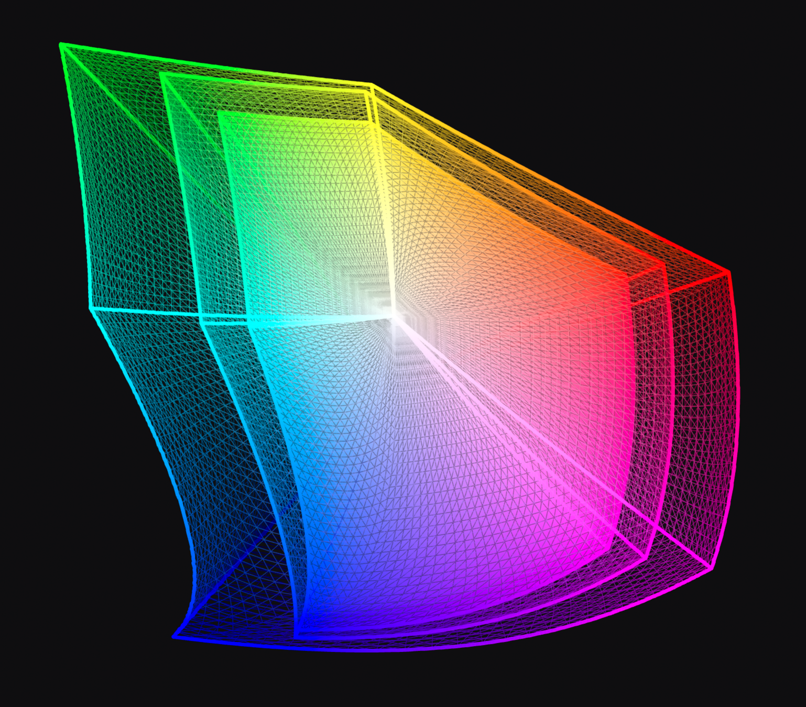
A top-down view of three gamuts, plotted in Oklab with the positive a-axis towards the right and the positive b-axis towards the top; looking down the l-axis so white and neutrals are in the center. The largest of the three gamuts is ITU Rec BT.2020; the medium-sized one is Display P3, and the smallest is sRGB. Rendering by Alexey Ardov.
The gamuts of different color spaces may be compared
by looking at the volume (in cubic Lab units) of colors that can be expressed.
The following table examines the predefined color spaces available in CSS.
color space
Volume (million Lab units)
sRGB
0.820
display-p3
1.233
a98-rgb
1.310
prophoto-rgb
2.896
rec2020
2.042
A color in CSS is either an invalid color,
as described below for each syntactic form,
or a valid color.
Any color which is not an invalid color is a valid color.
A color may be a valid color
but still be outside the range of colors
that can be produced by an output device
(a screen, projector, or printer)
It is said to be out of gamut.
Each valid color is either in-gamut
for a particular output device (screen, or printer)
or it is out of gamut.
For example, given a screen which covers 100% of the display-p3 color space,
but no more, the following color is out of gamut:
color(prophoto-rgb 0.880.450.10)
because, expressed in display-p3,
one or more coordinates are either greater that 1.0 or less than 0.0:
color(display-p3 1.08440.430.1)
This color is valid,
and could, for example, be used as a gradient stop,
but would need to be CSS gamut mapped for display,
producing a similar-looking but lower chroma (less saturated) color.
3. Applying Color in CSS
3.1.
Accessibility and Conveying Information By Color
Tests
This section provides authoring guidance, it does not need tests.
Although colors can add significant information to documents
and make them more readable,
color by itself should not be the sole means to convey important information.
Authors should consider the W3C Web Content Accessibility Guidelines [WCAG21]
when using color in their documents.
This property specifies the primary foreground color of the element.
This is used as the fill color of its text content,
and in addition specifies the used value
that currentcolor resolves to,
which allows indirect references to this foreground color
and affects the initial values of various other color properties
such as border-color and text-emphasis-color.
Sets the primary foreground color to the specified <color>.
The <color> type provides multiple ways to syntactically specify a given color.
For example, the following declarations all specify the sRGB color “lime”:
em {color: lime;}/* color keyword */
em {color:rgb(02550);}/* RGB range 0-255 */
em {color:rgb(0%100%0%);}/* RGB range 0%-100% */
em {color:color(sRGB 010);}/* sRGB range 0.0-1.0 */
When applied to text, this property, including its alpha component,
has no effect on “color glyphs” (such as the emoji in some fonts),
which are colored by a built-in palette.
However, some colored fonts are able to refer to a contextual “foreground color”,
such as by palette entry 0xFFFF in the COLR table of OpenType,
or by the context-fill value in SVG-in-OpenType.
In such cases, the foreground color is set by this property,
identical to how it sets the currentcolor value.
Opacity can be thought of as a postprocessing operation.
Conceptually, after the element (including its descendants) is rendered into an RGBA offscreen image,
the opacity setting specifies how to blend the offscreen rendering into
the current composite rendering.
See simple alpha compositing for details.
Represented as a <number>, the useful range of the value is 0
(representing full transparency)
to 1
(representing full opacity).
It can also be written as a <percentage>,
which computes to
the equivalent <number>
(0% to 0, 100% to 1).
The opacity property applies the specified opacity to the element as a whole,
including its contents,
rather than applying it to each descendant individually.
This means that, for example,
an opaque child occluding part of the element’s background will continue to do so even when opacity is less than 1,
but the element and child as a whole will show the underlying page through themselves.
It also means that the glyphs
corresponding to all characters in the element
are treated as a whole;
any overlapping portions do not increase the opacity.
Correct and incorrect rendering of text
with an opacity value of less than one,
whose glyphs overlap.
If separate opacity for each glyph is desired,
it can be achieved by using a color value
which includes alpha,
rather than setting the opacity property.
If a box has opacity less than 1,
it forms a stacking context for its children.
(This prevents its contents from interleaving in the z-axis
with content outside it.)
Furthermore, if the z-index property applies to the box,
the auto value is treated as 0 for the element;
it is otherwise painted on the same layer within its parent stacking context
as positioned elements with stack level 0
(as if it were a positioned element with z-index:0).
These rules about z-order do not apply to SVG elements,
since SVG has its own rendering model ([SVG11], Chapter 3).
The value of the opacity property
does not affect hit testing.
3.4. Color Space of Tagged Images
An tagged image is an image
that is explicitly assigned a color profile,
as defined by the image format.
This is usually done by including an
International Color Consortium (ICC) profile [ICC].
For example JPEG [JPEG], PNG [PNG] and TIFF [TIFF]
all specify a means to embed an ICC profile.
Image formats may also use other, equivalent methods, often for brevity.
For example, PNG specifies a means (the
sRGB chunk)
to explicitly tag an image as being in the sRGB color space,
without including the sRGB ICC profile.
Similarly, PNG specifies a compact means
(the cICP chunk)
to explicitly tag an image as being one of various SDR or HDR color spaces,
such as Display P3 or BT.2100 HLG,
without including an ICC profile.
Tagged RGB images,
and tagged images using a transformation of RGB such as YCbCr,
if the color profile or other identifying information is valid,
must be treated as being in the specified color space.
For example, when a browser running on a system with a Display P3 monitor
displays an JPEG image
tagged as being in the ITU Rec BT.2020 [Rec.2020]
color space, it must convert the colors
from ITU Rec BT.2020 to Display P3
so that they display correctly.
It must not treat the ITU Rec BT.2020 values
as if they were Display P3 values, which would produce incorrect colors.
If the color profile or other identifying information is invalid, the image is treated as described for untagged images.
3.5.
Color Spaces of Untagged Colors
For compatibility, colors specified in HTML,
and untagged images must be treated
as being in the sRGB color space ([SRGB])
unless otherwise specified.
This section describes a type, it is primarily tested where that type is used.
Colors in CSS are represented as a list of color components,
also sometimes called “channels”,
representing axises in the color space.
Each component has a minimum and maximum value,
and can take any value between those two.
Additionally, every color is accompanied by
an alpha component,
indicating how transparent it is,
and thus how much of the backdrop one can see through the color.
CSS has several syntaxes for specifying color values:
the sRGB hex color notation
which represents the RGB and alpha components in hexadecimal notation
the various color functions
which can represent colors using a variety of color spaces and coordinate systems
The color functions
use CSS functional notation
to represent colors in a variety of color spaces
by specifying their component coordinates.
Some of these use a cylindrical polar color model,
specifying color by a <hue> angle,
a central axis representing lightness
(black-to-white),
and a radius representing saturation or chroma
(how far the color is from a neutral grey).
The others use a rectangular orthogonal color model,
specifying color using three
orthogonal component axes.
rgb() and its rgba() alias,
which (like the hex color notation) specify sRGB colors directly
by their red/green/blue/alpha components.
hsl() and its hsla() alias,
which specify sRGB colors
by hue, saturation, and lightness
using the HSL cylindrical coordinate model.
hwb(),
which specifies an sRGB color
by hue, whiteness, and blackness
using the HWB cylindrical coordinate model.
lab(),
which specifies a CIELAB color
by CIE Lightness and its a- and b-axis hue coordinates
(red/green-ness, and yellow/blue-ness)
using the CIE LAB rectangular coordinate model.
oklab(),
which specifies an Oklab color
by Oklab Lightness and its a- and b-axis hue coordinates
(red/green-ness, and yellow/blue-ness)
using the Oklab rectangular coordinate model.
oklch() ,
which specifies an Oklab color
by Oklab Lightness, Chroma, and hue
using the OkLCh cylindrical coordinate model.
For easy reference in other specifications,
opaque black is defined as the color rgb(0 0 0 / 100%);
transparent black is the same color,
but fully transparent—i.e. rgb(0 0 0 / 0%).
The following represents a saturated sRGB red that is 50% opaque:
rgb(100%0%0% / 50%)
4.1.2.
Legacy (Comma-separated) Color Function Syntax
For Web compatibility,
the syntactic forms
of rgb(), rgba(), hsl(), and hsla(),
(those defined in earlier specifications)
also support a
legacy color syntax
which has the following differences:
color components are separated by commas
(optionally preceded and/or followed by whitespace)
non-opaque forms use a separate notation
(for example hsla() rather than hsl())
and the alpha term is separated by commas
(optionally preceded and/or followed by whitespace)
minimum required precision is lower, 8 bits per component
Unless otherwise specified,
an <alpha-value> component of a color defaults to 100% when omitted.
Values outside the range [0,1] are not invalid,
but are clamped to that range at parsed-value time.
4.3.
Representing Cylindrical-coordinate Hues: the <hue> syntax
Tests
This section provides definitions used later, it does not need tests.
Hue is represented as an angle of the color circle
(the rainbow, twisted around into a circle, and with purple added between violet and red).
Because this value is so often given in degrees,
the argument can also be given as a number,
which is interpreted as a number of degrees
and is the canonical unit.
This number is normalized
to the range [0,360).
For example, in hsl(-540 0 0)
or hsl(540 0 0),
the <hue> component is normalized to 180 degrees.
In hsl(360 0 0)
the <hue> component is normalized to 0 degrees.
In hsl(calc(-infinity) 0 0)
or hsl(calc(infinity) 0 0),
the <hue> component is again normalized to 0 degrees.
Note: The angles and spacing
corresponding to particular hues
depend on the color space.
For example, in HSL and HWB, which use the sRGB color space,
sRGB green is 120 degrees.
In LCH, sRGB green is 134.39 degrees,
display-p3 green is 136.01 degrees,
a98-rgb green is 145.97 degrees
and prophoto-rgb green is 141.04 degrees
(because these are all different shades of green).
<hue> components are the most common components to become powerless;
any color sufficiently close to the central achromatic axis
will have a powerless hue component.
4.4.
“Missing” Color Components and the none Keyword
In certain cases,
a color can have one or more
missing color components.
In this specification,
this happens automatically due to hue-based interpolation
for some colors (such as white);
other specifications can define additional situations
in which components are automatically missing.
It can also be specified explicitly,
by providing the keyword none
for a component in a color function.
All color functions
(with the exception of those using the legacy color syntax)
allow any of their components to be specified as none.
This should be done with care,
and only when the particular effect of doing so is desired.
For all other purposes, a missing component behaves as a zero value,
in the appropriate unit for that component: 0, 0%, or 0deg.
This includes rendering the color directly,
converting it to another color space,
performing computations on the color component values,
etc.
If a color with a missing component is serialized
or otherwise presented directly to an author,
then for legacy color syntax
it represents that component as a zero value;
otherwise,
it represents that component as being the none keyword.
A missing hue is common when interpolating in cylindrical color spaces.
For example, using the color-mix() function specified in [CSS-COLOR-5]
one could write color-mix(in hsl, white 30%, green 70%).
Since white is an achromatic color,
it has a missing hue when expressed in hsl()
(effectively hsl(none 0% 100%)),
since any hue will produce the same color)
which means that the color-mix function
will treat it as having the same hue as green
(effectively hsl(120deg 0% 100%)),
and then interpolate based on those components.
The result will be a color that truly looks like a blend of green and white,
rather than perhaps looking reddish
(if whites hue was defaulted to 0deg).
Explicitly specifying missing components can be useful
to achieve an effect where you only want
to interpolate certain components of a color.
For example, to animate a color to "grayscale", no matter what the color is,
one can interpolate it with oklch(none 0 none).
This will take the hue and lightness from the starting color,
but animate its chroma down to 0,
rendering it into an equal-lightness gray
with a steady hue across the whole animation.
Doing this manually would require
matching the hue and lightness of the starting color explicitly.
4.4.1.
“Powerless” Color Components
Individual color syntaxes can specify that,
in some cases,
a given component of their syntax becomes a
powerless color component.
This indicates that the value of the component doesn’t affect the rendered color;
any value you give it will result in the same color displayed in the screen.
For example, in hsl(), the hue component is powerless
when the saturation component is 0%;
a 0% saturation indicates a grayscale color,
which has no hue at all,
so 0deg and 180deg, or any other angle,
will give the exact same result.
If a powerless component is manually specified,
it acts as normal;
the fact that it’s powerless has no effect.
However, if a color is automatically produced by color space conversion,
then any powerless components in the result must instead be set to missing,
instead of whatever value was produced by the conversion process.
When performing color space conversion to a cylindrical polar color space,
user agents shall treat a hue component as powerless
if the chroma (or other measure of colorfulness, such as saturation in hsl)
is less than the epsilon (ε) specified for that color space.
For example, a gray color converted into oklch() may,
due to numerical errors,
have an extremely small chroma rather than precisely 0%;
as a result, the hue component is powerless.
This section provides a definition referenced elsewhere, it does not need tests.
To parse a CSS <color> value,
given a stringinput,
and an optional context elementelement:
Parseinput as a <color>.
If the result is failure,
return failure;
otherwise, let color be the result.
Let used color be the result of resolvingcolor
to a used color.
If the value of other properties
on the element a <color> is on
is required to do the resolution
(such as resolving a currentcolor or system color),
use element if it was passed,
or the initial values of the properties if not.
Return used color.
Note: This algorithm is not intented
to parse a CSS <color> value
specified in a CSS stylesheet
or with a CSSOM interface,
but in other places
like HTML attributes or Canvas interfaces.
5.
sRGB Colors
CSS colors in the sRGB color space
are represented by a triplet of values—red, green, and blue—identifying a point in the sRGB color space [SRGB].
This is an internationally-recognized, device-independent color space,
and so is useful for specifying colors that will be displayed on a computer screen,
but is also useful for specifying colors on other types of devices, like printers.
The first three arguments specify the r, g and b (red, green, and blue)
components of the color, respectively.
0% represents the minimum value for that color component in the sRGB gamut,
and 100% represents the maximum value.
The percentage reference range of the color components comes from the historical fact that
many graphics engines stored the color components internally as a single byte,
which can hold integers between 0 and 255.
Implementations should honor the precision of the component as authored or calculated wherever possible.
If this is not possible, the component should be rounded towards +∞.
The final argument, the <alpha-value>, specifies the alpha of the color.
If omitted, it defaults to 100%.
The CSS hex color notation
allows an sRGB color to be specified by giving the components as hexadecimal numbers,
which is similar to how colors are often written directly in computer code.
It’s also shorter than writing the same color out in rgb() notation.
The syntax of a <hex-color> is a <hash-token> token whose value consists of 3, 4, 6, or 8 hexadecimal digits.
In other words, a hex color is written as a hash character, "#",
followed by some number of digits 0-9 or letters a-f
(the case of the letters doesn’t matter - #00ff00 is identical to #00FF00).
The number of hex digits given determines how to decode the hex notation into an RGB color:
6 digits
The first pair of digits, interpreted as a hexadecimal number,
specifies the red component of the color,
where 00 represents the minimum value
and ff (255 in decimal) represents the maximum.
The next pair of digits, interpreted in the same way,
specifies the green component,
and the last pair specifies the blue.
The alpha component of the color is fully opaque.
In other words, #00ff00 represents the same color as rgb(0 255 0) (a lime green).
8 digits
The first 6 digits are interpreted identically to the 6-digit notation.
The last pair of digits, interpreted as a hexadecimal number,
specifies the alpha component of the color,
where 00 represents a fully transparent color
and ff represent a fully opaque color.
In other words, #0000ffcc represents the same color as rgb(0 0 100% / 80%) (a slightly-transparent blue).
3 digits
This is a shorter variant of the 6-digit notation.
The first digit, interpreted as a hexadecimal number,
specifies the red component of the color,
where 0 represents the minimum value
and f represents the maximum.
The next two digits represent the green and blue components, respectively,
in the same way.
The alpha component of the color is fully opaque.
This syntax is often explained by saying that it’s identical to a 6-digit notation obtained by "duplicating" all of the digits.
For example, the notation #123 specifies the same color as the notation #112233.
This method of specifying a color has lower "resolution" than the 6-digit notation;
there are only 4096 possible colors expressible in the 3-digit hex syntax,
as opposed to approximately 17 million in 6-digit hex syntax.
4 digits
This is a shorter variant of the 8-digit notation,
"expanded" in the same way as the 3-digit notation is.
The first digit, interpreted as a hexadecimal number,
specifies the red component of the color,
where 0 represents the minimum value
and f represents the maximum.
The next three digits represent the green, blue, and alpha components, respectively.
In addition to the various numeric syntaxes for <color>s,
CSS defines several sets of color keywords that can be used instead—each with their own advantages or use cases.
6.1.
Named Colors
CSS defines a large set of named colors,
so that common colors can be written and read more easily.
A <named-color> is written as an <ident>,
accepted anywhere a <color> is.
As usual for CSS-defined <ident>s,
all of these keywords are ASCII case-insensitive.
The names resolve to colors in sRGB.
16 of CSS’s named colors come from the VGA palette originally, and were then adopted into HTML:
aqua, black, blue, fuchsia, gray, green, lime, maroon, navy, olive, purple, red, silver, teal, white, and yellow.
Most of the rest
come from one version of the X11 color system,
used in Unix-derived systems to specify colors for the console,
and were then adopted into SVG.
Note: these color names are standardized here,
not because they are good,
but because their use and implementation has been widespread for decades
and the standard needs to reflect reality.
Indeed, it is often hard to imagine what each name will look like (hence the list below);
the names are not evenly distributed throughout the sRGB color volume,
the names are not even internally consistent
( darkgray is lighter than
gray, while
lightpink is darker than
pink),
and some names
(such as indianred,
which was originally named after a red pigment from India),
have been found to be offensive.
Thus, their use is not encouraged.
(Two special color values, transparent and currentcolor,
are specially defined in their own sections.)
The following table defines all of the opaque named colors,
by giving equivalent numeric specifications in the other color syntaxes.
In general, the <system-color> keywords
reflect default color choices made by the user, the browser, or the OS.
They are typically used in the browser default stylesheet, for this reason.
To maintain legibility,
the <system-color> keywords also respond to light mode or dark mode changes.
For example, traditional blue link text is legible on a white background
(WCAG contrast 8.59:1, AAA pass)
but would not be legible on a black background
(WCAG contrast 2.44:1, AA fail).
Instead, a lighter blue such as #81D9FE would be used in dark mode
(WCAG contrast 13.28:1, AAA pass).
Legible link text
Illegible link text
Legible link text
However, in forced colors mode,
most colors on the page are forced into a restricted, user-chosen palette.
The <system-color> keywords
expose these user-chosen colors
so that the rest of the page can integrate with this restricted palette.
When the values of <system-color> keywords come from the browser,
(as opposed to being OS defaults or user choices) the browser should
ensure that matching
foreground/background pairs have a minimum
of WCAG AA contrast.
However, user preferences (for higher or lower contrast),
whether set as a browser preference, a user stylesheet,
or by altering the OS defaults,
must take precedence over this requirement.
Authors may also use these keywords at any time,
but should be careful to use the colors
in matching background-foreground pairs
to ensure appropriate contrast,
as any particular contrast relationship across non-matching pairs
(e.g. Canvas and ButtonText)
is not guaranteed.
Note: As with all other keywords,
these names are ASCII case-insensitive.
They are shown here with mixed capitalization for legibility.
For systems that do not have a particular system UI concept,
the specified value should be mapped to
the most closely related system color value that exists.
The following system color pairings are expected to form legible background-foreground colors:
User Agents may,
to mitigate privacy and security risks such as fingerprinting,
elect to return fixed values for the used value of system colors
which do not reflect customisation or theming choices
made by the user.
In the above example, the emphasis marks are black over the text "Some" and "emphasized text",
but red over the text "really".
Note:
Multi-word keywords in CSS usually separate their component words with hyphens.
currentcolor doesn’t, because (deep breath)
it was originally introduced in SVG
as a property value, "current-color" with the usual CSS spelling.
It (along with all other properties and their values)
then became presentation attributes and attribute values,
as well as properties,
to make generation with XSLT easier.
Then all of the presentation attributes were changed
from hyphenated to camelCase, because the DOM
had an issue with hyphen meaning "minus".
But then, they didn’t follow CSS conventions
anymore so all the properties and property values
that were already part of CSS were changed back to hyphenated!
currentcolor was not a part of CSS at that time,
so remained camelCased.
Only later did CSS pick it up,
at which point the capitalization stopped mattering,
as CSS keywords are ASCII case-insensitive.
The RGB system for specifying colors,
while convenient for machines and graphic libraries,
is often regarded as very difficult for humans to gain an intuitive grasp on.
It’s not easy to tell, for example,
how to alter an RGB color to produce a lighter variant of the same hue.
There are several other color schemes possible.
One such is the HSL [HSL] color scheme,
which is more intuitive to use,
but still maps easily back to RGB colors.
HSL colors are specified
as a triplet of hue, saturation, and lightness.
The syntax of the hsl() and hsla() functions is:
In HSL (and HWB) the angle 0deg represents sRGB primary red
(as does 360deg, 720deg, etc.),
and the rest of the hues are spread around the circle,
so 120deg represents sRGB primary green,
240deg represents sRGB primary blue, etc.
The next two arguments are the saturation and lightness, respectively.
For saturation, 100% or 100 is a fully-saturated, bright color,
and 0% or 0 is a fully-unsaturated gray.
For lightness, 50% or 50 represents the "normal" color,
while 100% or 100 is white and 0% or 0 is black.
For historical reasons,
if the saturation is less than 0%
it is clamped to 0%
at parsed-value time,
before being converted to an sRGB color.
The final argument specifies the alpha component of the color.
It’s interpreted identically to the fourth argument of the rgb() function.
If omitted, it defaults to 100%.
HSL colors resolve to sRGB.
If the saturation of an HSL color is 0% or 0,
then the hue component is powerless.
For example, an ordinary red,
the same color you would see from the keyword red
or the hex notation #f00,
is represented in HSL as hsl(0deg 100% 50%).
An advantage of HSL over RGB is that it is more intuitive:
people can guess at the colors they want,
and then tweak.
For example, the following colors can all be generated off of the basic "green" hue,
just by varying the other two arguments:
hsl(120deg100%50%)lime greenhsl(120deg100%25%)dark greenhsl(120deg100%75%)light greenhsl(120deg75%85%)pastel green
A disadvantage of HSL over OkLCh
is that hue manipulation changes the visual lightness,
and that hues are not evenly spaced apart.
It is thus easier in HSL to create sets of matching colors
(by keeping the hue the same and varying the saturation and lightness),
compared to manipulating the sRGB component values;
however, because the lightness is simply the mean of the gamma-corrected
red, green and blue components
it does not correspond to the visual perception of lightness
across hues.
For example, blue
is represented in HSL as
hsl(240deg 100% 50%)
while yellow
is hsl(60deg 100% 50%).
Both have an HSL Lightness of 50%,
but clearly the yellow looks much lighter than the blue.
In OkLCh, sRGB blue is
oklch(0.452 0.313 264.1)
while
sRGB yellow is
oklch(0.968 0.211 109.8).
The OkLCh Lightnesses of 0.452 and 0.968 clearly reflect
the visual lightnesses of the two colors.
The hue angle in HSL is not perceptually uniform;
colors appear bunched up in some areas
and widely spaced in others.
For example, the pair of hues
hsl(220deg 100% 50%)
and
hsl(250deg 100% 50%)
have an HSL hue difference of 250-220 = 30deg and look fairly similar,
while another pair of colors
hsl(50deg 100% 50%)
and
hsl(80deg 100% 50%),
which also have a hue difference of 80-50 = 30deg, look very different.
In OkLCh, the same pair of colors
oklch(0.533 0.26 262.6)
and
oklch(0.462 0.306 268.9)
have a hue difference of 268.9 - 262.6 = 6.3deg
while the second pair
oklch(0.882 0.181 94.24)
and
oklch(0.91 0.245 129.9)
have a hue difference of 129.9 - 94.24 = 35.66deg,
correctly reflecting the visual separation of hues.
Converting an HSL color to sRGB is straightforward mathematically.
Here’s a sample implementation of the conversion algorithm in JavaScript.
It returns an array of three numbers
representing the red, green, and blue components of the colors,
which for colors in the sRGB gamut will be in the range [0, 1].
This code assumes that parse-time clamping
of negative saturation has already been applied.
/** * @param {number} hue - Hue as degrees 0..360 * @param {number} sat - Saturation in reference range [0,100] * @param {number} light - Lightness in reference range [0,100] * @return {number[]} Array of sRGB components; in-gamut colors in range [0..1] */function hslToRgb(hue, sat, light){
sat /=100;
light /=100;function f(n){let k =(n + hue/30)%12;let a = sat * Math.min(light,1- light);return light - a * Math.max(-1, Math.min(k -3,9- k,1));}return[f(0), f(8), f(4)];}
7.2.
Converting sRGB Colors to HSL
Conversion in the reverse direction proceeds similarly.
Special care is taken to deal with
intermediate negative values of saturation,
which can be produced by colors far outside the sRGB gamut.
/** * @param {number} red - Red component 0..1 * @param {number} green - Green component 0..1 * @param {number} blue - Blue component 0..1 * @return {number[]} Array of HSL values: Hue as degrees 0..360, Saturation and Lightness in reference range [0,100] */function rgbToHsl (red, green, blue){let max = Math.max(red, green, blue);let min = Math.min(red, green, blue);let[hue, sat, light]=[NaN,0,(min + max)/2];let d = max - min;let epsilon =1/100000;// max Sat is 1, in this codeif(d !==0){
sat =(light ===0|| light ===1)?0:(max - light)/ Math.min(light,1- light);switch(max){case red: hue =(green - blue)/ d +(green < blue ?6:0);break;case green: hue =(blue - red)/ d +2;break;case blue: hue =(red - green)/ d +4;}
hue = hue *60;}// Very out of gamut colors can produce negative saturation// If so, just rotate the hue by 180 and use a positive saturation// see https://github.com/w3c/csswg-drafts/issues/9222if(sat <0){
hue +=180;
sat = Math.abs(sat);}if(hue >=360){
hue -=360;}if(sat <= epsilon){
hue =NaN;}return[hue, sat *100, light *100];}
7.3.
Examples of HSL Colors
This section is not normative.
Tests
This section is not normative, it does not need tests.
The tables below illustrate a wide range of possible HSL colors.
Each table represents one hue,
selected at 30° intervals,
to illustrate the common "core" hues:
red,
yellow,
green,
cyan,
blue,
magenta,
and the six intermediary colors between these.
In each table, the X axis represents the saturation
while the Y axis represents the lightness.
HWB (short for Hue-Whiteness-Blackness)
[HWB]
is another method of specifying sRGB colors,
similar to HSL', but often even easier for humans to work with.
It describes colors with a starting hue,
then a degree of whiteness and blackness to mix into that base hue.
Many color-pickers are based on the HWB color system,
due to its intuitiveness.
HWB colors resolve to sRGB.
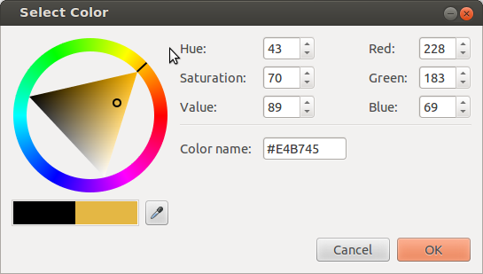
This is a screenshot of Chrome’s color picker,
shown when a user activates an <inputtype="color">.
The outer wheel is used to select the hue,
then the relative amounts of white and black are selected by clicking on the inner triangle.
The first argument specifies the hue,
and is defined identically to hsl();
this means it suffers the same disadvantages
such as hue uniformity.
The second argument specifies the amount of white to mix in,
as a percentage from 0% (no whiteness) to 100% (full whiteness).
Similarly, the third argument specifies the amount of black to mix in,
also from 0% (no blackness) to 100% (full blackness).
For example, hwb(150 20% 10%)
is the same color as
hsl(150 77.78% 55%)
and
rgb(20% 90% 55%).
Values outside of these ranges
are not invalid;
hue angles outside the range [0,360) will be normalized to that range
and values of white and black which sum to 100% or greater will
produce achromatic colors as described below.
The resulting color can be thought of conceptually as a mixture of paint in the chosen hue,
white paint, and black paint,
with the relative amounts of each determined by the percentages.
If the sum white+black is greater than or equal to 100%,
it defines an achromatic color,
i.e. a shade of gray;
when converted to sRGB the R, G and B values are identical
and have the value white / (white + black).
For example, in the color
hwb(45 40% 80%)
white and black adds to 120, so this is an achromatic color
whose R, G and B components are 40 / 40 + 80 = 0.33
rgb(33.33% 33.33% 33.33%).
Achromatic HWB colors no longer contain any hint of the chosen hue.
In this case, the hue component is powerless.
The fourth argument specifies the alpha component of the color.
It’s interpreted identically to the fourth argument of the rgb() function.
If omitted, it defaults to 100%.
There is no Web compatibility issue
with hwb, which is new in this level of the specification, and so
hwb() does not support a legacy color syntax
that separates all of its arguments with commas.
Using commas inside hwb() is an error.
Converting an HWB color to sRGB is straightforward,
and related to how one converts HSL to RGB.
The following Javascript implementation of the algorithm
first normalizes the white and black components,
so their sum is no larger than 100%.
/** * @param {number} hue - Hue as degrees 0..360 * @param {number} white - Whiteness in reference range [0,100] * @param {number} black - Blackness in reference range [0,100] * @return {number[]} Array of RGB components 0..1 */function hwbToRgb(hue, white, black){
white /=100;
black /=100;if(white + black >=1){let gray = white /(white + black);return[gray, gray, gray];}let rgb = hslToRgb(hue,100,50);for(let i =0; i <3; i++){
rgb[i]*=(1- white - black);
rgb[i]+= white;}return rgb;}
8.2.
Converting sRGB Colors to HWB
Conversion in the reverse direction proceeds similarly.
/** * @param {number} red - Red component 0..1 * @param {number} green - Green component 0..1 * @param {number} blue - Blue component 0..1 * @return {number} Hue as degrees 0..360 */function rgbToHue(red, green, blue){// Similar to rgbToHsl, except that saturation and lightness are not calculated, and// potential negative saturation is ignored.let max = Math.max(red, green, blue);let min = Math.min(red, green, blue);let hue =NaN;let d = max - min;if(d !==0){switch(max){case red: hue =(green - blue)/ d +(green < blue ?6:0);break;case green: hue =(blue - red)/ d +2;break;case blue: hue =(red - green)/ d +4;}
hue *=60;}if(hue >=360){
hue -=360;}return hue;}/** * @param {number} red - Red component 0..1 * @param {number} green - Green component 0..1 * @param {number} blue - Blue component 0..1 * @return {number[]} Array of HWB values: Hue as degrees 0..360, Whiteness and Blackness in reference range [0,100] */function rgbToHwb(red, green, blue){let epsilon =1/100000;// account for multiply by 100var hue = rgbToHue(red, green, blue);var white = Math.min(red, green, blue);var black =1- Math.max(red, green, blue);if(white + black >=1- epsilon){
hue =NaN;}return([hue, white*100, black*100]);}
8.3.
Examples of HWB Colors
This section is not normative.
Tests
This section is not normative, it does not need tests.
0° Reds
W\B
0%
20%
40%
60%
80%
100%
0%
20%
40%
60%
80%
100%
30° Red-Yellows (Oranges)
W\B
0%
20%
40%
60%
80%
100%
0%
20%
40%
60%
80%
100%
60° Yellows
W\B
0%
20%
40%
60%
80%
100%
0%
20%
40%
60%
80%
100%
90° Yellow-Greens
W\B
0%
20%
40%
60%
80%
100%
0%
20%
40%
60%
80%
100%
120° Greens
W\B
0%
20%
40%
60%
80%
100%
0%
20%
40%
60%
80%
100%
150° Green-Cyans
W\B
0%
20%
40%
60%
80%
100%
0%
20%
40%
60%
80%
100%
180° Cyans
W\B
0%
20%
40%
60%
80%
100%
0%
20%
40%
60%
80%
100%
210° Cyan-Blues
W\B
0%
20%
40%
60%
80%
100%
0%
20%
40%
60%
80%
100%
240° Blues
W\B
0%
20%
40%
60%
80%
100%
0%
20%
40%
60%
80%
100%
270° Blue-Magentas
W\B
0%
20%
40%
60%
80%
100%
0%
20%
40%
60%
80%
100%
300° Magentas
W\B
0%
20%
40%
60%
80%
100%
0%
20%
40%
60%
80%
100%
330° Magenta-Reds
W\B
0%
20%
40%
60%
80%
100%
0%
20%
40%
60%
80%
100%
9.
Device-independent Colors: CIE Lab and LCH, Oklab and OkLCh
9.1. CIE Lab and LCH
This section is not normative.
Tests
This section is not normative, it does not need tests.
Physical measurements of a color are typically expressed in the CIE L*a*b* [CIELAB] color space,
created in 1976 by the CIE
and commonly referred to simply as Lab.
Color conversions from one device to another may also use Lab as an intermediate step.
Derived from human vision experiments,
Lab represents the entire range of color that humans can see.
Lab is a rectangular coordinate system
with a central Lightness (L) axis.
This value is usually written as a unitless number;
for compatibility with the rest of CSS, it may also be written as a percentage.
100% means an L value of 100, not 1.0.
L=0% or 0 is deep black (no light at all)
while L=100% or 100 is a diffuse white.
Usefully, L=50% or 50 is mid gray, by design,
and equal increments in L are evenly spaced visually:
the Lab color space is intended to be perceptually uniform.
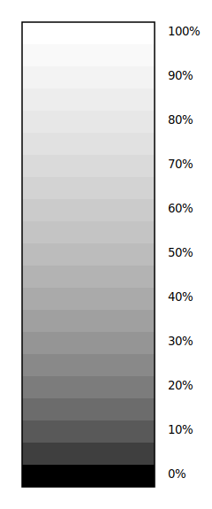
This figure shows, to the left, the Lightness axis of the CIE Lab color space.
Twenty-one neutral swatches are shown (L=0%, L=5%, to L=100%).
The steps are equally spaced, visually.
To the right, the same number of steps in luminance
are equally spaced in light energy but not equally spaced visually.
The a and b axes convey hue;
positive values along the a axis are a purplish red
while negative values are the complementary color, a green.
Similarly, positive values along the b axis are yellow
and negative are the complementary blue/violet.
Desaturated colors have small values of a and b
and are close to the L axis;
saturated colors lie far from the L axis.
The illuminant is D50 white, a standardized daylight spectrum with a color temperature of 5000K,
as reflected by a perfect diffuse reflector; it approximates the color of sunlight on a sunny day.
D50 is also the whitepoint used for the profile connection space in ICC color interconversion,
the whitepoint used in image editors which offer Lab editing,
and the value used by physical measurement devices
such as spectrophotometers and spectroradiometers,
when they report measured colors in Lab.
Conversion from colors specified using other white points is called a chromatic adaptation transform,
which models the changes in the human visual system as we adapt to a new lighting condition.
The linear Bradford algorithm [ICC]
(a simplification of the original Bradford algorithm [Bradford-CAT])
is the industry standard chromatic adaptation transform,
and is easy to calculate as it is a simple matrix multiplication.
CIE LCH has the same L axis as Lab,
but uses polar coordinates C (chroma) and H (hue),
making it a polar, cylindrical coordinate system.
C is the geometric distance from the L axis
and H is the angle from the positive a axis,
towards the positive b axis.
This figure shows the L=50 plane of the CIE Lab color space.
20 degree increments in CIE LCH are displayed as circles
at three levels of Chroma: 20, 40 and 60.
All the 20 Chroma colors fit inside sRGB gamut,
some of 40 and 60 Chroma are outside.
These out of gamut colors are visualized as grey, with a red warning outer stroke.
Note: The L axis in Lab and LCH
is not to be confused with the L axis in HSL.
For example, in HSL, the sRGB colors blue (#00F) and yellow (#FF0)
have the same value of L (50%) even though visually, blue is much darker.
This is much clearer in Lab:
sRGB blue is lab(29.567% 68.298 -112.0294)
while
sRGB yellow is lab(97.607% -15.753 93.388).
In Lab and LCH, if two colors have the same measured L value,
they have identical visual lightness.
HSL and related polar RGB models were developed
in an attempt
to give similar usability benefits for RGB that LCH gave to Lab,
but are significantly less accurate.
Although the use of CIE Lab and LCH is widespread,
it is known to have some problems. In particular:
Hue linearity
In the blue region (LCH Hue between 270° and 330°),
visual hue departs from what LCH predicts.
Plotting a set of blues of the same hue and differing Chroma,
which should lie on a straight line from the neutral axis,
instead form a curve.
Put another way,
as a saturated blue has it’s Chroma progressively reduced,
it becomes noticeably purple.
Hue uniformity
While hues in LCH are in general evenly spaced,
(and far better than HSL or HWB),
uniformity is not perfect.
Over-prediction of high Chroma differences
For high Chroma colors,
changes in Chroma are less noticeable
than for more neutral colors.
These deficiencies affect, for example,
creation of evenly spaced gradients,
gamut mapping from one color space to a smaller one,
and computation of the visual difference between two colors.
To compensate for this,
formulae to predict the visual difference between two colors
(delta E)
have been made more accurate over time
(but also, much more complex to compute).
The current industry standard formula,
delta E 2000,
works well to mitigate some of the Lab and LCH problems.
A sample implementation is given in
§ 19.1 ΔE2000.
This does not help with hue curvature, however.
9.2. Oklab and OkLCh
This section is not normative.
Tests
This section is not normative, it does not need tests.
Recently, Oklab,
an improved Lab-like space has been developed [Oklab].
The corresponding polar form is called OkLCh.
It was produced by numerical optimization
of a large dataset of visually similar colors,
and has improved hue linearity,
hue uniformity,
and chroma uniformity
compared to CIE LCH.
Like CIE Lab, there is a central lightness L axis
which is usually written as a unitless number in the range [0,1];
for compatibility with the rest of CSS,
it may be written as a percentage. 100% means an L value of 1.0.
L=0% or 0.0 is deep black (no light at all) while L=100% or 1.0 is a diffuse white.
Note: Unlike CIE Lab, which assumes adaptation to the diffuse white,
Oklab assumes adaptation to the color being defined,
which is intended to make it scale invariant.
As with CIE Lab, the a and b axes convey hue;
positive values along the a axis are a purplish red
while negative values are the complementary color, a green.
Similarly, positive values along the b axis are yellow
and negative are the complementary blue/violet.
The illuminant is D65, the same white point
as most RGB color spaces.
OkLCh has the same L axis as Oklab,
but uses polar coordinates C (chroma) and H (hue).
Note: Unlike CIE LCH, where Chroma can reach values of 200 or more,
OkLCh Chroma ranges to 0.5 or so.
The hue angles between CIE LCH and OkLCh are broadly similar,
but not identical.
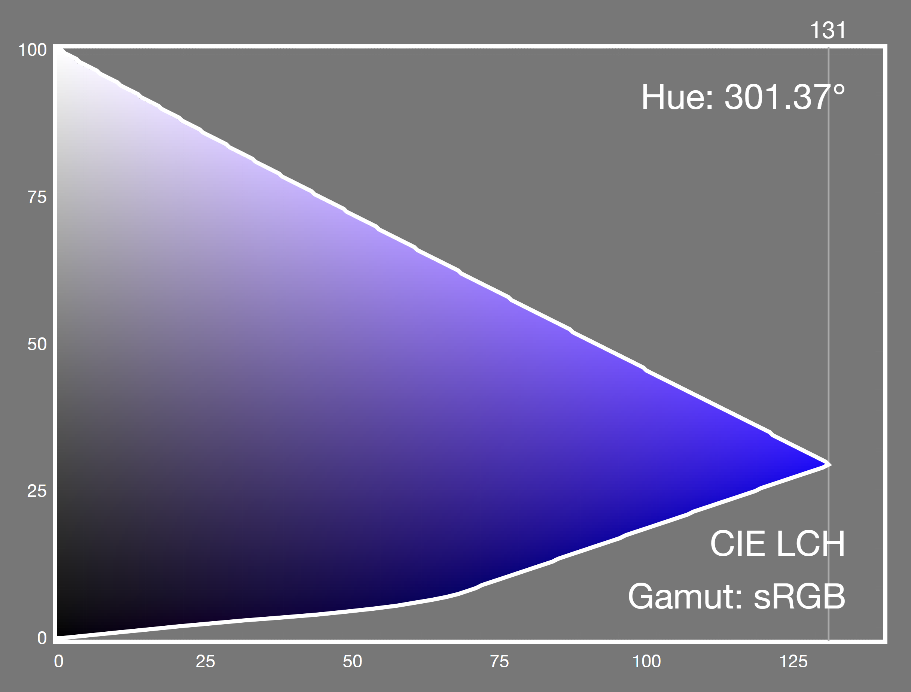
A constant CIE LCH hue slice,
showing the sRGB gamut around primary blue.
A noticeable purpling is immediately evident.
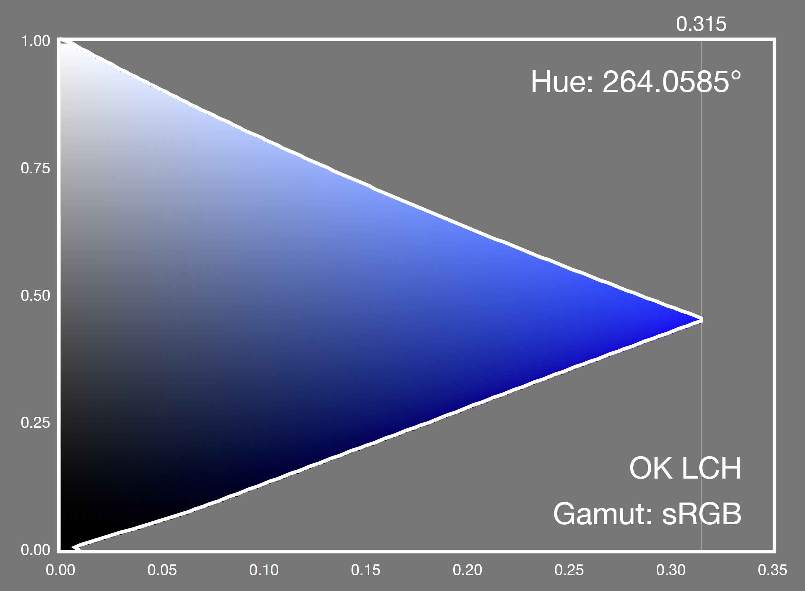
A constant OkLCh hue slice,
showing the sRGB gamut around primary blue.
The visual hue remains constant.
Because Oklab is more perceptually uniform than CIE Lab,
the color difference is a straightforward distance in 3D space
(root sum of squares).
Although trivial,
a sample implementation is give in
§ 19.2 ΔEOK.
9.3.
Specifying Lab and LCH: the lab() and lch() functional notations
CSS allows colors to be directly expressed in Lab and LCH.
In Lab,
the first argument specifies the CIE Lightness, L.
This is a number between 0% or 0
and 100% or 100
Values less than 0% or 0 must be clamped to 0% at parsed-value time;
values greater than
100% or 100 are clamped to 100% at parsed-value time.
The second and third arguments are the distances along the "a" and "b" axes
in the Lab color space,
as described in the previous section.
These values are signed
(allow both positive and negative values)
and theoretically unbounded
(but in practice do not exceed ±160
for real-world colors).
If the lightness of a Lab color (after clamping) is 0%,
or 100%
the color will be displayed as black, or white, respectively
due to gamut mapping to the display.
In CIE LCH
the first argument specifies the CIE Lightness L,
interpreted identically to the Lightness argument of lab().
The second argument is the chroma C,
(roughly representing the "amount of color").
Its minimum useful value is 0,
while its maximum is theoretically unbounded
(but in practice does not exceed 230).
If the provided value is negative,
it is clamped to 0 at parsed-value time.
The third argument is the hue angle H.
It’s interpreted similarly to the <hue> argument of hsl(),
but doesn’t map hues to angles in the same way
because they are evenly spaced perceptually.
Instead, 0deg points along the positive "a" axis (toward purplish red),
(as does 360deg, 720deg, etc.);
90deg points along the positive "b" axis (toward mustard yellow),
180deg points along the negative "a" axis (toward greenish cyan),
and 270deg points along the negative "b" axis (toward sky blue).
If the chroma of an LCH color is 0%,
the hue component is powerless.
If the lightness of an LCH color (after clamping) is 0%,
or 100%,
the color will be displayed as black, or white, respectively
due to gamut mapping to the display.
There is no Web compatibility issue
with lab or lch', which are new in this level of the specification, and so
lab() and lch() do not support a legacy color syntax
that separates all of their arguments with commas.
Using commas inside these functions is an error.
9.4.
Specifying Oklab and OkLCh: the oklab() and oklch() functional notations
CSS allows colors to be directly expressed in Oklab and OkLCh.
In Oklab
the first argument specifies the Oklab Lightness.
This is a number between 0% or 0
and 100% or 1.0.
Values less than 0% or 0.0 must be clamped to 0%
at parsed-value time;
values greater than 100% or 1.0 are clamped to 100%
at parsed-value time.
The second and third arguments are the distances along
the "a" and "b" axes
in the Oklab color space,
as described in the previous section.
These values are signed
(allow both positive and negative values)
and theoretically unbounded
(but in practice do not exceed ±0.5).
If the lightness of an Oklab color is 0% or 0,
or 100% or 1.0,
the color will be displayed as black, or white, respectively
due to gamut mapping to the display.
In OkLCh
the first argument specifies the OkLCh Lightness L,
interpreted identically to the Lightness argument of oklab().
The second argument is the chroma C.
Its minimum useful value is 0,
while its maximum is theoretically unbounded
(but in practice does not exceed 0.5).
If the provided value is negative,
it is clamped to 0 at parsed-value time.
The third argument is the hue angle H.
It’s interpreted similarly to the <hue> arguments
of hsl() and lch(),
but doesn’t map hues to angles in the same way.
0deg points along the positive "a" axis (toward purplish red),
(as does 360deg, 720deg, etc.);
90deg points along the positive "b" axis (toward mustard yellow),
180deg points along the negative "a" axis (toward greenish cyan),
and 270deg points along the negative "b" axis (toward sky blue).
If the chroma of an OkLCh color is 0% or 0,
the hue component is powerless.
If the lightness of an OkLCh color is 0% or 0,
or 100% or 1.0,
the color will be displayed as black, or white, respectively
due to gamut mapping to the display.
There is no Web compatibility issue
with oklab or oklch', which are new in this level of the specification, and so
oklab() and oklch() do not support a legacy color syntax
that separates all of their arguments with commas.
Using commas inside these functions is an error.
9.5.
Converting Lab or Oklab colors to LCH or OkLCh colors
Conversion to the polar form is trivial:
C = sqrt(a^2 + b^2)
if (C > epsilon) H = atan2(b, a) else H is missing
L is the same
For extremely small values of a and b (near-zero Chroma),
although the visual color does not change from being on the neutral axis,
small changes to the values can result in the reported hue angle swinging about wildly
and being essentially random.
In CSS, this means the hue is powerless,
and treated as missing when converted into LCH or OkLCh;
in non-CSS contexts this might be reflected as a missing value, such as NaN.
9.6.
Converting LCH or OkLCh colors to Lab or Oklab colors
Conversion to the rectangular form is trivial:
If H is missing, a = b = 0
Otherwise,
a = C cos(H)
b = C sin(H)
L is the same
10.
Predefined Color Spaces
CSS provides several predefined color spaces
including display-p3[Display-P3],
which is a wide gamut space typical of current wide-gamut monitors,
prophoto-rgb, widely used by photographers
and rec2020[Rec.2020],
which is a broadcast industry standard,
ultra-wide gamut space capable of representing almost all visible real-world colors.
10.1.
Specifying Predefined Colors: the color() function
The color() function allows a color to be specified
in a particular, specified color space
(rather than the implicit sRGB color space that most of the other color functions operate in).
Its syntax is:
The three parameter values that the color space takes (RGB or XYZ values).
An out of gamut color has component values
less than 0 or 0%, or greater than 1 or 100%.
These are not invalid, and are retained for intermediate computations;
instead, for display, they are
css gamut mapped using a relative colorimetric intent
which brings the values
(in the display color space)
within the range 0/0% to 1/100%
at actual-value time.
There is no Web compatibility issue
with color(), which is new in this level of the specification, and so
color() does not support a legacy color syntax
that separates all of its arguments with commas.
Using commas inside this function is an error.
If the specified color can be displayed,
(that is, it isn’t an invalid color
and isn’t out of gamut)
then this is the actual value of the color() function.
This very intense lime color is in-gamut for rec.2020:
color(rec2020 0.420530.9797800.00579);
in LCH, that color is
lch(86.6146%160.0000136.0088);
in display-p3, that color is
color(display-p3 -0.61121.0079-0.2192);
and is out of gamut for display-p3
(red and blue are negative, green is greater than 1).
If you have a display-p3 screen, that color is:
valid
in gamut (for rec.2020)
out of gamut (for your display)
and so can’t be displayed
The color used for display will be a less intense color
produced automatically by gamut mapping.
This example has a typo!
An intense green is provided in profoto-rgb space (which doesn’t exist).
This makes it invalid, so the used value is opaque black
color(profoto-rgb 0.48350.91670.2188)
10.2.
The Predefined sRGB Color Space: the sRGB keyword
The sRGB predefined color space
defined below
is the same as is used for legacy sRGB colors,
such as rgb().
srgb
The srgb[SRGB] color space accepts three numeric parameters,
representing the red, green, and blue components of the color.
In-gamut colors have all three components in the range [0, 1].
The whitepoint is D65.
[SRGB] specifies two viewing conditions, encoding
and typical. The [ICC] recommends using the encoding
conditions for color conversion and for optimal viewing, which are
the values in the table below.
sRGB is the default color space for CSS,
used for all the legacy color functions.
10.3.
The Predefined Linear-light sRGB Color Space: the srgb-linear keyword
The sRGB-linear predefined color space
is the same as srgbexcept that the transfer function
is linear-light (there is no gamma-encoding).
srgb-linear
The srgb-linear[SRGB] color space accepts three numeric parameters,
representing the red, green, and blue components of the color.
In-gamut colors have all three components in the range [0, 1].
The whitepoint is D65.
10.4.
The Predefined Display P3 Color Space: the display-p3 keyword
display-p3
The display-p3[Display-P3] color space accepts three numeric parameters,
representing the red, green, and blue components of the color.
In-gamut colors have all three components in the range [0, 1].
It uses the same primary chromaticities as [DCI-P3],
but with a D65 whitepoint, and the same transfer curve as sRGB.
Modern displays, TVs, laptop screens and phone screens
are able to display all, or nearly all,
of the display-p3 gamut.
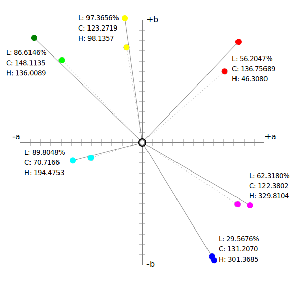
Visualization of the P3 color space in LCH.
The primaries and secondaries are shown
(but in sRGB, not in the correct colors).
For comparison, the sRGB primaries and secondaries
are also shown, as dashed circles.
P3 primaries have higher Chroma.
10.5.
The Predefined A98 RGB Color Space: the a98-rgb keyword
a98-rgb
The a98-rgb color space accepts three numeric parameters,
representing the red, green, and blue components of the color.
In-gamut colors have all three components in the range [0, 1].
The transfer curve is
a gamma function, close to but not exactly 1/2.2.
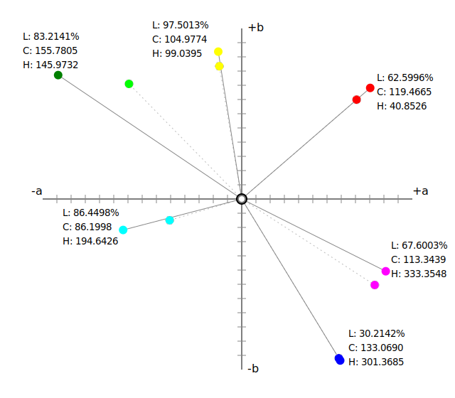
Visualization of the A98 color space in LCH.
The primaries and secondaries are shown
(but in sRGB, not in the correct colors).
For comparison, the sRGB primaries and secondaries
are also shown, as dashed circles.
a98 primaries have higher Chroma,
especially the yellow, green and cyan.
10.6.
The Predefined ProPhoto RGB Color Space: the prophoto-rgb keyword
prophoto-rgb
The prophoto-rgb color space accepts three numeric parameters,
representing the red, green, and blue components of the color.
In-gamut colors have all three components in the range [0, 1].
The transfer curve is
a gamma function with a value of 1/1.8,
and a small linear portion near black.
The white point is D50, the same as is used by CIE Lab. Thus,
conversion to CIE Lab does not require the chromatic adaptation step.
The ProPhoto RGB space uses hyper-saturated,
non physically realizable primaries.
These were chosen to allow
a wide color gamut and in particular,
to minimize hue shifts under tonal manipulation.
It is often used in digital photography as a wide gamut
color space for the archival version of
photographic images. The prophoto-rgb color space allows CSS to
specify colors that will match colors in such images
having the same RGB values.
The ProPhoto RGB space was originally developed by Kodak
and is described in [Wolfe].
It was standardized by ISO as [ROMM],[ROMM-RGB].
The white luminance is given as a range, and
the viewing flare (and thus, the black luminance)
is 0.5% to 1.0% of this.
const E =16/512;let sign = c <0?-1:1;let abs = Math.abs(c);if(abs <= E){
cl = c /16;}else{
cl = sign * Math.pow(c,1.8);}
c is the gamma-encoded red, green or blue component.
cl is the corresponding linear-light component.
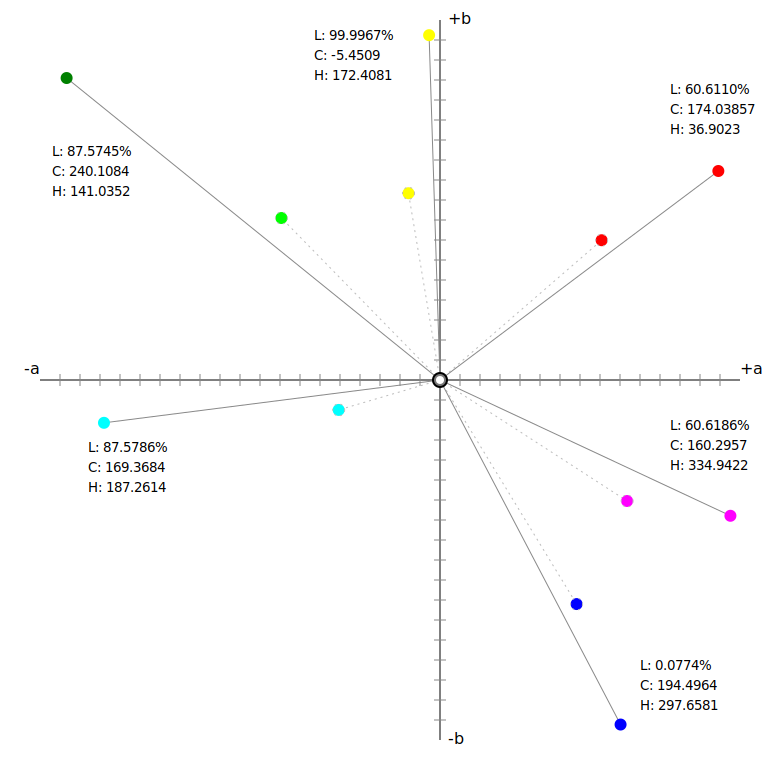
Visualization of the prophoto-rgb color space in LCH. The primaries and secondaries are shown
(but in sRGB, not in the correct colors).
For comparison, the sRGB primaries and secondaries
are also shown, as dashed circles.
prophoto-rgb primaries and secondaries have much higher Chroma,
but much of this ultrawide gamut
does not correspond to physically realizable colors.
10.7.
The Predefined ITU-R BT.2020-2 Color Space: the rec2020 keyword
rec2020
The rec2020[Rec.2020] color space accepts three numeric parameters,
representing the red, green, and blue components of the color.
In-gamut colors have all three components in the range [0, 1],
("full-range", in video terminology).
ITU Reference 2020 is used for
Ultra High Definition, 4k and 8k television.
The primaries are physically realizable,
but with difficulty
as they lie very close to the spectral locus.
Current displays are unable to reproduce the full gamut of rec2020.
Coverage is expected to increase over time as displays improve.
c is the gamma-encoded red, green or blue component.
cl is the corresponding linear-light component.
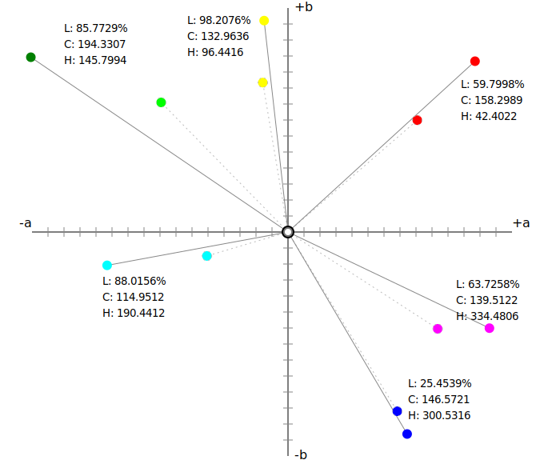
Visualization of the rec2020 color space in LCH. The primaries and secondaries are shown
(but in sRGB, not in the correct colors).
For comparison, the sRGB primaries and secondaries
are also shown, as dashed circles.
rec2020 primaries have much higher Chroma.
10.8.
The Predefined CIE XYZ Color Spaces: the xyz-d50, xyz-d65, and xyz keywords
xyz-d50, xyz-d65, xyz
The xyz color space accepts three numeric parameters,
representing the X,Y and Z values.
It represents the CIE XYZ [COLORIMETRY] color space,
scaled such that diffuse white has a luminance (Y) of 1.0.
and, if necessary, chromatically adapted to the reference white.
The reference white for xyz-d50 is D50, while
the reference white for xyz-d65 and xyz is D65.
Values greater than 1.0/100% are allowed and must not be clamped;
colors where Y is greater than 1.0 represent colors brighter than diffuse white.
Values less than 0/0% are uncommon,
but can occur as a result of chromatic adaptation,
and likewise must not be clamped.
10.9.
Converting Predefined Color Spaces to Lab or Oklab
For all predefined RGB color spaces,
conversion to Lab requires several steps,
although in practice all but the first step are linear calculations and can be combined.
Convert from gamma-encoded RGB to linear-light RGB (undo gamma encoding)
Convert from linear RGB to CIE XYZ
If needed, convert from a D65 whitepoint
(used by sRGB, display-p3, a98-rgb and rec2020)
to the D50 whitepoint used in Lab,
with the linear Bradford transform. prophoto-rgb already has a D50 whitepoint.
Convert D50-adapted XYZ to Lab
Conversion to Oklab is similar,
but the chromatic adaptation step
is only needed for prophoto-rgb.
Convert from gamma-encoded RGB to linear-light RGB (undo gamma encoding)
Convert from linear RGB to CIE XYZ
If needed, convert from a D50 whitepoint (used by prophoto-rgb)
to the D65 whitepoint used in Oklab,
with the linear Bradford transform.
10.10.
Converting Lab or Oklab to Predefined RGB Color Spaces
Conversion from Lab to predefined spaces like display-p3 or rec2020
also requires multiple steps,
and again in practice all but the last step are linear calculations and can be combined.
Convert Lab to (D50-adapted) XYZ
If needed, convert from a D50 whitepoint (used by Lab)
to the D65 whitepoint used in sRGB and most other RGB spaces,
with the linear Bradford transform. prophoto-rgb' does not require this step.
Convert from (D65-adapted) CIE XYZ to linear RGB
Convert from linear-light RGB to RGB (do gamma encoding)
Conversion from Oklab is similar,
but the chromatic adaptation step
is only needed for prophoto-rgb.
Convert Oklab to (D65-adapted) XYZ
If needed, convert from a D65 whitepoint (used by Oklab)
to the D50 whitepoint used in prophoto-rgb,
with the linear Bradford transform.
Convert from (D65-adapted) CIE XYZ to linear RGB
Convert from linear-light RGB to RGB (do gamma encoding)
Implementations may choose to implement these steps in some other way
(for example, using an ICC profile with relative colorimetric rendering intent)
provided the results are the same for colors inside both the source and destination gamuts.
10.11.
Converting Between Predefined RGB Color Spaces
Conversion from one predefined RGB color space to another
requires multiple steps,
one of which is only needed when the whitepoints differ.
To convert from src to dest:
Convert from gamma-encoded srcRGB to linear-light srcRGB (undo gamma encoding)
Convert from linear srcRGB to CIE XYZ
If src and dest have different whitepoints,
convert the XYZ value from srcWhite to destWhite
with the linear Bradford transform.
Convert from CIE XYZ to linear destRGB
Convert from linear-light destRGB to destRGB (do gamma encoding)
This section provides an algorithm used later, it does not need tests.
Colors may be converted
from one color space to another and,
provided that there is no gamut mapping
and that each color space can represent out of gamut colors,
(for RGB spaces, this means that the transfer function is defined over the extended range)
then (subject to numerical precision and round-off error)
the two colors will look the same and represent the same color sensation.
To convert a color col1 in a source color space src
with white point src-white
to a color col2 in destination color space dest
with white point dest-white:
If src is not a linear-light representation,
convert it to linear light (undo gamma-encoding)
and let this be the new col1.
Convert col1 to CIE XYZ with a given whitepoint src-white
and let this be xyz.
If dest-white is not the same as src-white,
chromatically adapt xyz to dest-white
using a linear Bradford chromatic adaptation transform,
and let this be the new xyz.
If dest-rect is not the same as dest,
in other words dest is a cylindrical polar color representation,
convert from dest-rect to dest, and let this be col2.
This may produce missing components.
12.
Color Interpolation
Color interpolation happens with
gradients,
compositing,
filters,
transitions,
animations, and
color mixing and color modification functions.
Interpolation between two <color> values
takes place by executing the following steps:
converting them to a given color space
which will be referred to as the interpolation color space below.
If one or both colors are already in the interpolation color space,
this conversion changes any powerless components to missing values
(if required) re-inserting carried forward values in the converted colors
Mixing or otherwise combining colors
has different results depending on the interpolation color space used.
Thus, different color spaces may be more appropriate for each interpolation use case.
In some cases, the result of physically mixing two colored lights is desired.
In that case, the CIE XYZ or srgb-linear color space is appropriate, because they are linear in light intensity.
If colors need to be evenly spaced perceptually (such as in a gradient),
the Oklab color space (and the older Lab), are designed to be perceptually uniform.
If avoiding graying out in color mixing is desired, i.e. maximizing chroma throughout the transition,
OkLCh (and the older LCH) work well for that.
Lastly, compatibility with legacy Web content may be the most important consideration.
The sRGB color space, which is neither linear-light nor perceptually uniform, is the choice here,
even though it produces poorer results (overly dark or greyish mixes).
These features are collectively termed the host syntax.
The host syntax should define
what the defaultinterpolation color space should be for each case,
and preferably provide syntax for authors to override this default.
If such syntax is part of a property value, it should use the
color-interpolation-method production,
defined below for easy reference from other specifications.
This ensures consistency across CSS,
and that further customizations on how color interpolation is performed
can automatically percolate across all of CSS.
The keywords in the definitions of <rectangular-color-space> and <polar-color-space>
each refer to their corresponding color space,
represented in CSS either by the functional syntax with the same name,
or (if no such function is present), by the corresponding <ident> in the color() function.
If the host syntax does not define what color space
interpolation should take place in,
it defaults to Oklab.
However, user agents must handle interpolation
between legacy sRGB color formats
(hex colors, named colors,
rgb(), hsl() or hwb()
and the equivalent alpha-including forms)
in gamma-encoded sRGB space.
This provides Web compatibility;
legacy sRGB content interpolates in the sRGB space by default.
This also means that authors can choose
to opt-in to better interpolation,
even between sRGB colors,
by using the non-legacy color(srgb r g b) form
for at least one of their colors,
or by explicitly specifying an interpolation color space.
If the colors to be interpolated are outside the gamut
of the interpolation color space ,
then once converted to that space,
they will contain out of range values.
These are not clipped; the values must be interpolated as-is.
Thus, the first stage in interpolating two colors
is to classify any missing components
in the input colors,
and compare them to the components of the
interpolation color space.
If any analogous components which are missing components are found,
they will be carried forward
and re-inserted in the converted color
before premultiplication, and
before linear interpolation takes place.
The analogous components are as follows:
Category
Components
Reds
r,x
Greens
g,y
Blues
b,z
Lightness
L
Colorfulness
C, S
Hue
H
Opponent a
a
Opponent b
b
Alpha
alpha
Note: for the purposes of this classification,
the XYZ spaces are considered super-saturated RGB spaces.
Also, despite Saturation being Lightness-dependent,
it falls in the same category as Chroma here.
The Whiteness and Blackness components of HWB
have no analogs in other color spaces.
For example, if these two colors
are to be interpolated in OkLCh,
the missing hue in the CIE LCH color
is analogous to the hue component of OkLCh
and will be carried forward
while the missing blue component
in the second color
is not analogous to any OkLCh component
and will not be carried forward:
lch(50%0.02 none)color(display-p3 0.70.5 none)
which convert to
oklch(56.897%0.00010)oklch(63.612%0.152278.748)
and with carried forward missing component re-inserted,
the two colors to be interpolated are:
If a color with a carried forward missing component
is interpolated
with another color
which is not missing that component,
the missing component
is treated as having
the other color’s component value.
Therefore,
the carrying-forward step
must be performed before any
powerless component handling.
For example, if these two colors are interpolated,
the second of which has a missing hue:
oklch(78.3%0.108326.5)oklch(39.2%0.4 none)
Then the actual colors to be interpolated are
oklch(78.3%0.108326.5)oklch(39.2%0.4326.5)
and not
oklch(78.3%0.108326.5)oklch(39.2%0.40)
If the carried forward missing component
is alpha, the color must be premultiplied with this carried forward value,
not with the zero value that would have resulted from color conversion.
For example, if these two colors are interpolated,
the second of which has a missing alpha:
Interpolating colors using the premultiplied representations
tends to produce more attractive transitions than the non-premultiplied representations,
particularly when transitioning from a fully opaque color to fully transparent.
Note that transitions where either the transparency or the color are held constant
(for example, transitioning between rgba(255,0,0,100%) (opaque red)
and rgba(0,0,255,100%) (opaque blue),
or rgba(255,0,0,100%) (opaque red)
and rgba(255,0,0,0%) (transparent red))
have identical results whether the color interpolation is done in premultiplied or non-premultiplied color-space.
Differences only arise when both the color and transparency differ between the two endpoints.
The following example illustrates the difference between
a gradient transitioning via pre-multiplied values
(in this case sRGB, since all colors involved are legacy colors)
and one transitioning (incorrectly) via non-premultiplied values.
In both of these examples,
the gradient is drawn over a white background.
Both gradients could be written with the following value:
linear-gradient(90deg, red, transparent, blue)
With premultiplied colors,
transitions to or from "transparent" always look nice:
On the other hand,
if a gradient were to incorrectly transition in non-premultiplied space,
the center of the gradient would be a noticeably grayish color,
because "transparent" is actually a shorthand for rgba(0,0,0,0), or transparent black,
meaning that the red transitions to a black
as it loses opacity,
and similarly with the blue’s transition:
For example, to interpolate, in the sRGB color space, the two sRGB colors
rgb(24% 12% 98% / 0.4)
and
rgb(62% 26% 64% / 0.6)
they would first be converted to premultiplied form
[9.6% 4.8% 39.2% ]
and
[37.2% 15.6% 38.4%]
before interpolation.
The midpoint of linearly interpolating these colors
would be [23.4% 10.2% 38.8%]
which, with an alpha value of 0.5,
is rgb(46.8% 20.4% 77.6% / 0.5)
when premultiplication is undone.
To interpolate, in the Lab color space, the two colors
rgb(76% 62% 03% / 0.4)
and
color(display-p3 0.84 0.19 0.72 / 0.6)
they are first converted to lab
lab(66.927% 4.873 68.622 / 0.4)
lab(53.503% 82.672 -33.901 / 0.6)
then the L, a and b coordinates are premultiplied before interpolation
[26.771% 1.949 27.449]
and
[32.102% 49.603 -20.341].
The midpoint of linearly interpolating these would be
[29.4365% 25.776 3.554]
which, with an alpha value of 0.5,
is lab(58.873% 51.552 7.108) / 0.5)
when premultiplication is undone.
To interpolate, in the chroma-preserving LCH color space, the same two colors
rgb(76% 62% 03% / 0.4)
and
color(display-p3 0.84 0.19 0.72 / 0.6)
they are first converted to LCH
lch(66.93% 68.79 85.94 / 0.4)
lch(53.5% 89.35 337.7 / 0.6)
then the L and C coordinates (but not H) are premultiplied before interpolation
[26.771% 27.516 85.94]
and
[32.102% 53.61 337.7].
The midpoint of linearly interpolating these,
along the shorter hue arc (the default) would be
[29.4365% 40.563 31.82]
which, with an alpha value of 0.5,
is lch(58.873% 81.126 31.82) / 0.5)
when premultiplication is undone.
There is sample JavaScript code
for alpha premultiplication and un-premultiplication,
for both polar and rectangular color spaces,
in § 18 Sample code for Color Conversions.
12.4.
Hue Interpolation
For color functions with a hue angle (LCH, HSL, HWB etc), there are multiple ways to interpolate.
As arcs greater than 360° are rarely desirable,
hue angles are fixed up prior to interpolation
so that per-component interpolation is done over less than 360°, often less than 180°.
Host syntax can specify any of the following algorithms for hue interpolation
(angles in the following are in degrees, but the logic is the same regardless of how they are specified).
Specifying a hue interpolation strategy is already part of the <color-interpolation-method> syntax
via the <hue-interpolation-method> token.
Unless otherwise specified, if no specific hue interpolation algorithm is selected by the host syntax, the default is shorter.
Note: As a reminder,
if the interpolating colors were not already in the specified interpolation color space,
then converting them will turn any powerless components into missing components.
12.4.1.
shorter
Hue angles are interpolated to take the shorter of the two arcs
between the starting and ending hues.
For example, the midpoint when interpolating in OkLCh from a red
oklch(0.6 0.24 30) to a yellow
oklch(0.8 0.15 90)
would be at a hue angle of 30 + (90 - 30) * 0.5 = 60 degrees,
along the shorter arc between the two colors,
giving a deep orange
oklch(0.7 0.195 60)
Angles are adjusted so that θ₂ - θ₁ ∈ [-180, 180]. In pseudo-Javascript:
if (θ₂ - θ₁ > 180){
θ₁ += 360;}
else if (θ₂ - θ₁ < -180){
θ₂ += 360;}
12.4.2.
longer
Hue angles are interpolated to take the longer of the two arcs
between the starting and ending hues.
For example, the midpoint when interpolating in OkLCh from a red
oklch(0.6 0.24 30) to a yellow
oklch(0.8 0.15 90)
would be at a hue angle of (30 + 360 + 90) * 0.5 = 240 degrees,
along the longer arc between the two colors,
giving a sky blue
oklch(0.7 0.195 240)
Angles are adjusted so that θ₂ - θ₁ ∈ {(-360, -180], [180, 360)}. In pseudo-Javascript:
Hue angles are interpolated so that,
as they progress from the first color to the second,
the angle is always increasing.
If the angle increases to 360 it is reset to zero,
and then continues increasing.
Depending on the difference between the two angles,
this will either look the same as shorter or as longer.
However, if one of the hue angles is being animated,
and the hue angle difference passes through 180 degrees,
the interpolation will not flip to the other arc.
For example, the midpoint when interpolating in OkLCh from a deep brown
oklch(0.5 0.1 30) to a turquoise
oklch(0.7 0.1 190)
would be at a hue angle of (30 + 190) * 0.5 = 110 degrees,
giving a khaki
oklch(0.6 0.1 110).
However, if the hue of the second color is animated to
oklch(0.7 0.1 230),
the midpoint of the interpolation will be (30 + 230) * 0.5 = 130 degrees,
continuing in the same increasing direction,
giving another green
oklch(0.6 0.1 130)
rather than flipping to the opponent color part-way through the animation.
Angles are adjusted so that θ₂ - θ₁ ∈ [0, 360). In pseudo-Javascript:
if (θ₂ < θ₁){
θ₂ += 360;}
12.4.4.
decreasing
Hue angles are interpolated so that,
as they progress from the first color to the second,
the angle is always decreasing.
If the angle decreases to 0 it is reset to 360,
and then continues decreasing.
Depending on the difference between the two angles,
this will either look the same as shorter or as longer.
However, if one of the hue angles is being animated,
and the hue angle difference passes through 180 degrees,
the interpolation will not flip to the other arc.
For example, the midpoint when interpolating in OkLCh from a deep brown
oklch(0.5 0.1 30) to a turquoise
oklch(0.7 0.1 190)
would be at a hue angle of (30 + 360 + 190) * 0.5 = 290 degrees,
giving a purple
oklch(0.6 0.1 290).
However, if the hue of the second color is animated to
oklch(0.7 0.1 230),
the midpoint of the interpolation will be (30 + 360 + 230) * 0.5 = 310 degrees,
continuing in the same decreasing direction,
giving another purple
oklch(0.6 0.1 310)
rather than flipping to the opponent color part-way through the animation.
Angles are adjusted so that θ₂ - θ₁ ∈ (-360, 0]. In pseudo-Javascript:
if (θ₁ < θ₂){
θ₁ += 360;}
13.
Gamut Mapping
13.1.
An Introduction to Gamut Mapping
Note: This section provides important context for the specific requirements described elsewhere in the document.
This section is non-normative
Tests
This section is not normative, it does not need tests.
When a color in an origin color space
is converted to another, destination color space
which has a smaller gamut,
some colors will be outside the destination gamut.
For intermediate color calculations,
these out of gamut values are preserved.
However, if the destination is the display device
(a screen, or a printer)
then out of gamut values must be converted to
an in-gamut color.
Gamut mapping is the process of finding an in-gamut color
with the least objectionable change in visual appearance.
13.1.1.
Clipping
The simplest and least acceptable method
is simply to clip the component values
to the displayable range.
This changes the proportions of
the three primary colors (for an RGB display),
resulting in a hue shift.
For example,
consider the color color(srgb-linear 0.513).
Because this is a linear-light color space,
we can compare the intensities of the three components
and see that
the amount of blue light is three times the amount of green,
while the amount of red light is half that of green.
There is six times as much blue primary as red.
In OkLCh, this color has a hue angle of 265.1°
If we now clip this color
to bring it into gamut for sRGB,
we get color(srgb-linear 0.511).
The amount of blue light is the same as green.
In OkLCh, this color has a hue angle of 196.1°,
a substantial change of 69°.
13.1.2.
Closest Color (MINDE)
A better method is to map colors,
in a perceptually uniform color space,
by finding the closest in-gamut color
(so-called minimum ΔE or MINDE).
Clearly, the success of this technique
depends on
the degree of uniformity of the gamut mapping color space
and the predictive accuracy of the deltaE function used.
However, when doing gamut mapping
changes in Hue are particularly objectionable;
changes in Chroma are more tolerable,
and
small changes in Lightness can also be acceptable
especially if the alternative is a larger Chroma reduction.
MINDE weights changes in each dimension equally,
and thus gives suboptimal results.
13.1.3.
Chroma Reduction
To improve on MINDE algorithms,
colors are mapped in a perceptually uniform, polar color space
by holding the hue constant,
and reducing the chroma until the color falls in gamut.
In this example, Display P3 primary yellow
(color(display-p3 110))
is being mapped to an sRGB display.
The gamut mapping color space is OkLCh.
color(display-p3 110)
is
color(srgb 11-0.3463)
which is
color(oklch 0.964760.24503110.23)
By progressively reducing the chroma component
until the resulting color falls inside the sRGB gamut
(has no components negative, or greater than one)
a gamut mapped color is obtained.
color(oklch 0.964760.21094110.23)
which is
color(srgb 0.991160.997330.00001)
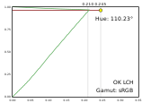
A constant-hue slice of OkLCh color space.
The vertical axis represents lightness,
the horizontal axis is chroma.
The color to be mapped,
shown as a yellow circle,
has the chroma reduced
while keeping hue and lightness constant.
The color therefore moves along the maroon line in the diagram,
towards the neutral axis on the left.
The gamut boundary of sRGB
is shown in green.
A practical implementation will converge more quickly than a linear reduction;
either by binary search,
or by computing the geometric intersection
of the line of constant hue and lightness with the gamut boundary.
13.1.4.
Excessive Chroma Reduction
Also, this simple approach will give sub-optimal results
for certain colors, principally very light colors
like yellow and cyan,
if the upper edge of the gamut boundary is shallow,
or even slightly concave.
The line of constant lightness can skim just above the gamut boundary,
resulting in an excessively low chroma in those cases.
The choice of color space will affect the acceptability of the gamut mapped colors.
In this example, Display P3 primary yellow (color(display-p3 110)
has the chroma progressively reduced in CIE LCH color space.
In the upper part of this diagram,
colors which are inside the gamut of sRGB are displayed as-is.
Colors inside the gamut of Display P3 (but outside sRGB) are in salmon.
Colors outside the gamut of Display P3 are in red.
The lower part of the diagram shows the linear-light intensities of
the Display P3 red, green and blue components.
It can be seen that reduction in CIE LCH chroma makes the red
intensity curve up, out of Display P3 gamut;
by the time it falls again the chroma is very low.
Simple gamut mapping in CIE LCH would give unsatisfactory results.
In this example, Display P3 primary yellow (color(display-p3 110)
has the chroma progressively reduced, but this time in OkLCh color space.
In the upper part of this diagram,
colors which are inside the gamut of sRGB are displayed as-is.
Colors inside the gamut of Display P3 (but outside sRGB) are in salmon.
Colors outside the gamut of Display P3 are in red.
The lower part of the diagram shows the linear-light intensities of
the Display P3 red, green and blue components.
It can be seen that reduction in OkLCh chroma is better behaved.
Colors do not go outside the Display P3 gamut, and the resulting
gamut-mapped yellow has good chroma.
Simple gamut mapping in OK LCH would give acceptable results.
13.1.5.
Chroma Reduction with Local Clipping
The simple chroma-reduction algorithm can be improved:
at each step,
the color difference is computed between the current mapped color
and a clipped version of that color.
If the current color is outside the gamut boundary,
but the color difference between it and the clipped version
is below the threshold for a just noticeable difference (JND),
the clipped version of the color is returned as the mapped result.
Effectively, this is doing a MINDE mapping at each stage,
but constrained so the hue and lightness changes
are very small,
and thus are not noticeable.
In this example, Display P3 primary yellow (color(display-p3 110)
has the chroma progressively reduced in CIE LCH color space,
with the local clip modification.
In the upper part of this diagram,
colors which are inside the gamut of sRGB are displayed as-is.
Colors inside the gamut of Display P3 (but outside sRGB) are in salmon.
Colors outside the gamut of Display P3 are in red.
The lower part of the diagram shows the linear-light intensities of
the Display P3 red, green and blue components.
It can be seen that reduction in CIE LCH chroma still makes the red
intensity curve up, out of Display P3 gamut;
but less than before and the sRGB boundary is found much more quickly.
Gamut mapping in CIE LCH with local clip would give acceptable results.
In this example, Display P3 primary yellow (color(display-p3 110)
has the chroma progressively reduced, but this time in OkLCh color space
and with the local clip modification.
In the upper part of this diagram,
colors which are inside the gamut of sRGB are displayed as-is.
Colors inside the gamut of Display P3 (but outside sRGB) are in salmon.
Colors outside the gamut of Display P3 are in red.
The lower part of the diagram shows the linear-light intensities of
the Display P3 red, green and blue components.
It can be seen that reduction in OkLCh chroma,
which was already good,
is further improved by the local clip modification.
Simple gamut mapping in CIE LCH with local clip would give excellent results.
13.1.6.
Deviations from Perceptual Uniformity: Hue Curvature
Using the CIE LCH color space
and deltaE2000 distance metric,
is known to give suboptimal results
with significant hue shifts,
for colors in the hue range
270° to 330°.
A constant-hue slice of CIE LCH color space,
at a hue angle of 301.37°
corresponding to sRGB primary blue.
The vertical axis is Lightness, the horizontal axis is Chroma.
Between chroma of 25 and 75, the hue is visibly purple,
becoming more blue between 100 and 131.
The same phenomenon continues past 131,
but cannot be shown on an sRGB display.
Using OkLCh color space
and deltaEOK distance metric
avoids this issue
at all hue angles.
A constant-hue slice of OkLCh color space,
at a hue angle of 264.06°
corresponding to sRGB primary blue.
The vertical axis is Lightness, the horizontal axis is Chroma.
The hue is visibly the same at all values of chroma,
up to 0.315 (the sRGB limit at this hue).
It continues to be constant beyond this point,
although that cannot be shown on an sRGB diagram.
13.2.
CSS Gamut Mapping to an RGB Destination
Tests
Actual values of color are not exposed to script, making this hard to test in an automated manner.
The CSS gamut mapping algorithm
applies to individual,
Standard Dynamic Range (SDR) CSS colors
which are out of gamut
of an RGB display
and thus require to be css gamut mapped.
It implements a relative colorimetric intent,
and colors inside the destination gamut are unchanged.
Note: other situations,
in particular mapping to printer gamuts
where the maximum black level is significantly above zero,
will require different algorithms
which align the respective black and white points,
which will result in lightness changes
for very light and very dark colors
as chroma is reduced..
Note: this algorithm is for individual, distinct colors;
for color images,
where relationships between neighboring pixels are important
and the aim is to preserve detail and texture,
a perceptual rendering intent is more appropriate
and in that case,
colors inside the destination gamut
could be changed.
For colors which are out of range on the Lightness axis,
white is returned in the destination color space
if the Lightness is greater than or equal to 1.0,
while black is returned in the destination color space
if the Lightness is less than or equal to 0.0.
For the binary search implementation,
at each step in the search,
the deltaEOK is computed between the current mapped color
and a clipped version of that color.
If the current color is outside the gamut boundary,
but the deltaEOK between it and the clipped version
is below a threshold for a just noticeable difference (JND),
the clipped version of the color is returned as the mapped result.
For the geometric implementation,
having found the exact intersection,
project outwards (towards higher chroma) along the line of constant lightness
until either:
the deltaEOK between the projected point
and a clipped version of that point
exceeds one JND, or
the chroma of the projected point is equal to
the chroma of the original color (i.e. do not project past the original color)
Then return the clipped version of the color as the mapped result.
For the OkLCh color space,
one JND is is an OkLCh difference of 0.02.
Note: In CIE Lab color space,
where the range of the Lightness component is 0 to 100,
using deltaE2000,
one JND is 2.
Because the range of Lightness in Oklab and OkLCh
is 0 to 1,
using deltaEOK,
one JND is 100 times smaller.
13.2.1.
Sample Pseudocode for the Binary Search Gamut Mapping Algorithm with Local MINDE
To CSS gamut map a color origin
in color space origin color space
to be in gamut of a destination color space destination:
if destination has no gamut limits (XYZ-D65, XYZ-D50, Lab, LCH, Oklab, OkLCh) convert origin to destination and return it as the gamut mapped color
let origin_OkLCh be origin converted
from origin color space to the OkLCh color space
if the Lightness of origin_OkLCh is greater than or equal to 100%,
convert `oklab(1 0 0 / origin.alpha)` to destination and return it as the gamut mapped color
if the Lightness of origin_OkLCh is less than than or equal to 0%,
convert `oklab(0 0 0 / origin.alpha)` to destination and return it as the gamut mapped color
let inGamut(color) be a function which returns true if, when passed a color,
that color is inside the gamut of destination.
For HSL and HWB, it returns true if the color is inside the gamut of sRGB.
if inGamut(origin_OkLCh) is true, convert origin_OkLCh to destination and return it as the gamut mapped color
otherwise, let delta(one, two) be a function which returns the deltaEOK of color one compared to color two
let JND be 0.02
let epsilon be 0.0001
let clip(color) be a function which converts color to destination,
clamps each component to the bounds of the reference range for that component
and returns the result
set current to origin_OkLCh
set clipped to clip(current)
set E to delta(clipped, current)
if E < JND
return clipped as the gamut mapped color
set min to zero
set max to the OkLCh chroma of origin_OkLCh
let min_inGamut be a boolean that represents when min is still in gamut, and set it to true
while (max - min is greater than epsilon) repeat the following steps
set chroma to (min + max) /2
set the chroma component of current to chroma
if min_inGamut is true and also if inGamut(current) is true, set min to chroma and continue to repeat these steps
otherwise, carry out these steps:
set clipped to clip(current)
set E to delta(clipped, current)
if E < JND
if (JND - E < epsilon) return clipped as the gamut mapped color
otherwise,
set min_inGamut to false
set min to chroma
otherwise, set max to chroma and continue to repeat these steps
Unless otherwise specified for a particular property,
specified colors are resolved to
computed colors
and then further to used colors as described below.
If the sRGB color was explicitly specified by the author as a named color,
or as a system color,
the declared value is that named or system color, converted to
ASCII lowercase.
The computed and used value
is the corresponding sRGB color,
paired with the specified alpha component
(after clamping to [0, 1])
and defaulting to opaque if unspecified).
The author-provided mixed-case form below has a declared value in all lowercase.
pUrPlE
purple
Otherwise, the declared, computed and used value
is the corresponding sRGB color,
paired with the specified alpha component
(after clamping to [0, 1])
and defaulting to opaque if unspecified).
For historical reasons, when calc() in sRGB colors
resolves to a single value,
the declared value serialises without the "calc(" ")" wrapper.
For example, if a color is given as
rgb(calc(64 * 2) 127 255)
the declared value will be
rgb(128 127 255)
and not
rgb(calc(128) 127 255).
For example, if a color is given as
hsl(38.82 calc(2 * 50%) 50%)
the declared value will be
rgb(255 165.2 0)
because the calc() is lost
during HSL to RGB conversion.
Also for historical reasons,
when calc() is simplified down to a single value,
the color values are clamped to [0.0, 255.0].
For example, if a color is given as
rgb(calc(100 * 4) 127 calc(20 - 35))
the declared value will be
rgb(255 127 0)
and not
rgb(calc(400) 127 calc(-15)).
This clamping also takes care of values such as Infinity, -Infinity, and NaN which will clamp at 255, 0 and 0 respectively.
The declared, computed and used value
is the corresponding CIE Lab or LCH color
(after clamping of L, C and H)
paired with the specified alpha component
(as a <number>, not a <percentage>;
and defaulting to opaque if unspecified).
The declared, computed and used value
is the corresponding Oklab or OkLCh color
(after clamping of L, C and H)
paired with the specified alpha component
(as a <number>, not a <percentage>;
and defaulting to opaque if unspecified).
The declared, computed and used value
is the color in the specified color space,
paired with the specified alpha component
(as a <number>, not a <percentage>;
and defaulting to opaque if unspecified).
For example, the computed value of
color(display-p3 0.8230.65540.2537 /1)
is
color(display-p3 0.8230.65540.2537)
For colors specified in the xyzcolor space,
which is an alias of the xyz-d65color space,
the computed and used value
is in the xyz-d65color space.
The declared value for each <system-color> keyword
and <deprecated-color> keyword
is itself.
The computed value
is the corresponding color in its color space.
However, such colors must not be altered by
'forced colors mode'.
In the color property,
the used value of currentcolor is the
resolved inherited value.
In any other property,
its used value is the used value of the color property on the same element.
Note: This means that if the currentcolor value is inherited,
it’s inherited as a keyword,
not as the value of the color property,
so descendants will use their own color property to resolve it.
For example, given this html:
<div><p>Assume this example text is long enough
to wrap on multiple lines.
</p></div>
and this css:
div {color: forestgreen;text-shadow: currentColor;}
p {color: mediumseagreen;}
p::firstline {color: yellowgreen;}
The used value of the inherited property text-shadow
on the first line fragment would be yellowgreen.
This section updates and replaces that part of CSS Object Model, section
Serializing CSS Values, which relates to serializing <color> values.
In this section, the strings used in the specification and the corresponding characters are as follows.
String
Character(s)
" "
U+0020 SPACE
"#"
U+0023 NUMBER SIGN
","
U+002C COMMA
"-"
U+002D HYPHEN-MINUS
"."
U+002E FULL STOP
"/"
U+002F SOLIDUS
"none"
U+006E LATIN SMALL LETTER N
U+006F LATIN SMALL LETTER O
U+006E LATIN SMALL LETTER N
U+0065 LATIN SMALL LETTER E
The string "." shall be used as a decimal separator,
regardless of locale,
and there shall be no thousands separator.
For syntactic forms which support missing color components,
the value none (equivalently NONE, nOnE, etc),
shall be serialized in all-lowercase
as the string "none".
15.1.
Serializing alpha values
This applies to any <color> value which can take an optional alpha value.
It does not apply to the opacity property.
If, after clamping to the range [0, 1] the alpha is 1,
it is omitted from the serialization;
an implicit value of 1 (fully opaque) is the default.
If the alpha is any other value than 1,
it is explicitly included in the serialization as described below.
If the value is internally represented as an integer
between 0 and 255 inclusive (i.e. 8-bit unsigned integer),
follow these steps:
Let alpha be the given integer.
If there exists an integer between 0 and 100 inclusive that,
when multiplied with 2.55 and rounded to the closest integer
(rounding up if two values are equally close), equals alpha,
let rounded be that integer divided by 100.
Otherwise, let rounded be alpha
divided by 0.255 and rounded to the closest integer
(rounding up if two values are equally close),
divided by 1000.
Return the result of serializing rounded
as a <number>.
Otherwise, return the result of serializing the given value
(as a <number>, not a <percentage>).
For example,
if the alpha is stored as the 8-bit unsigned integer 237,
the integer 93 satisfies the criterion
because Math.round(93 * 2.55) is 237,
and so the alpha is serialized as "0.93".
However,
if the alpha is stored as the 8-bit unsigned integer 236,
there is no such integer
(92 maps to 235 while 94 maps to 240),
and so since 236 ÷ 0.255 = 925.490196078
the alpha is serialized as "0.92549"
(no more than 6 figures, trailing zeroes omitted).
The <number> value is expressed in base ten,
with the "." character as decimal separator.
The leading zero must not be omitted.
Trailing zeroes must be omitted.
For example, an alpha value of 70%
will be serialized as the string
"0.7"
which has a leading zero before the decimal separator,
"." as decimal separator
(even if the current locale would use some other character,
such as ","),
and all digits after the "7" would be "0" and are omitted.
The precision with which alpha values are retained,
and thus the number of decimal places in the serialized value,
is not defined in this specification,
but must at least be sufficient
to round-trip integer percentage values.
Thus, the serialized value must contain
at least two decimal places
(unless trailing zeroes have been removed).
Values must be
rounded towards +∞, not truncated.
For example, an alpha value of 12.3456789%
could be serialized as the strings
"0.12" or "0.123" or "0.1234" or "0.12346"
(rounding the value of 5
towards +∞
because the following digit is 6)
or any longer, rounded serialization of the same form.
Because <alpha-value>s which were specified outside the valid range
are clamped at parse time, the declared value will be clamped.
However, per CSS Values 4 § 10.12 Range Checking, <alpha-value>s
specified using calc() are not clamped when the specified form is serialized;
but the computed values are clamped.
For example an alpha value which was specified directly as 120%
would be serialized as the string "1".
However, if it was specified as calc(2*60%)
the declared value would be serialized as the string "calc(1.2)".
Thus, the serialized declared value of transparent is the string "transparent",
while the serialized computed value of transparent is the string "rgba(0, 0, 0, 0)".
For all other sRGB values,
the declared, computed and used value
is the corresponding sRGB value.
During serialization,
any missing values
are converted to 0.
15.2.1. HTML-compatible serialization of sRGB values
If the following conditions are all true:
The color space is sRGB
The alpha is 1
The RGB component values are internally represented as integers between 0 and 255 inclusive (i.e. 8-bit unsigned integer)
HTML-compatible serialization is requested
Then corresponding sRGB values are serialized in 6-digit hex color notation as follows:
A seven-character string consisting of the character "#", followed immediately by the two-digit hexadecimal representations of the red component, the green component, and the blue component, in that order, using ASCII lower hex digits. No spaces are permitted.
The color space is sRGB, the representation is 8 bits per component,
the data format does not produce none values nor does it support extended range values,
and the alpha is 1.
The HTML-compatible serialization is the string "#ff00ff" (not "#FF00FF").
The alpha is not 1, so the CSS serialization is the string
"rgba(255, 0, 255, 0.93)".
15.2.2. CSS serialization of sRGB values
Corresponding sRGB values use either the rgb() or rgba() form
(depending on whether the (clamped) alpha is exactly 1, or not),
with all ASCII lowercase
letters for the function name.
For compatibility, the sRGB component values
are serialized in <number> form, not <percentage>.
Also for compatibility,
the component values are serialized in base 10,
with a range of [0-255], regardless of
the bit depth with which they are stored.
As noted earlier,
unitary alpha values are not explicitly serialized.
Also, for compatibility, if the alpha is exactly 1,
the rgb() form is used,
with an implicit alpha;
otherwise, the rgba() form is used,
with an explicit alpha value.
For compatibility,
the legacy form with comma separators is used;
exactly one ASCII space follows each comma.
This includes the comma (not slash) used
to separate the blue component of rgba()
from the alpha value.
Note: contrary to CSS Color 3,
the parameters of the rgb() function
are of type <number>, not <integer>.
Thus, any higher precision than eight bits
is indicated with a fractional part.
The precision with which sRGB component values are retained,
and thus the number of significant figures in the serialized value,
is not defined in this specification,
but must at least be sufficient
to round-trip eight bit values.
Values must be rounded towards +∞, not truncated.
Note: authors of scripts which expect
color values returned from
getComputedStyle
to have <integer> component values,
are advised to update them to also cope with
<number>.
For example,
rgb(146.064107.457131.223)
is now valid, and equal to
rgb(57.28%42.14%51.46%)
A conformant serialized form for both,
is the string "rgb(146.06, 107.46, 131.2)".
Trailing fractional zeroes in any component values must be omitted;
if the fractional part consists of all zeroes,
the decimal point must also be omitted.
This means that sRGB colors specified with integer component values
will serialize with backwards-compatible integer values.
The serialized computed value of
''goldenrod''
is the string "rgb(218, 165, 32)"
and not the string "rgb(218.000, 165.000, 32.000)"
15.3.
Serializing Lab and LCH values
The serialized form of lch() and lab() values
is derived from the computed value
and uses the lab() or lch() forms,
with ASCII lowercase
letters for the function name.
The component values are serialized in base 10;
the L, a, b and C component values
are serialized as <number>,
using the Lab percentage reference ranges
or the LCH percentage reference ranges
as appropriate
to perform percentage to number conversion;
thus 0% L maps to 0
and 100% L maps to 100.
A single ASCII space character " "
must be used as the separator
between the component values.
Trailing fractional zeroes in any component values must be omitted;
if the fractional part consists of all zeroes,
the decimal point must also be omitted.
The serialized value of
lch(37%105.0305.00)
is the string "lch(37 105 305)",
not "lch(37 105.0 305.00)".
The precision with which lab() component values are retained,
and thus the number of significant figures in the serialized value,
is not defined in this specification,
but due to the wide gamut must be sufficient
to round-trip L values between 0 and 100,
and a and b values between ±127,
with at least sixteen bit precision;
this will result in at least three decimal places
unless trailing zeroes have been omitted.
(half float or float, is recommended for internal storage).
Values must be rounded towards +∞, not truncated.
Note: a and b values outside ±125 are possible
with ultrawide gamut spaces. For example, all
of the prophoto-rgb primaries and secondaries
exceed this range, but are within ±200.
As noted earlier,
unitary alpha values are not explicitly serialized.
Non-unitary alpha values must be explicitly serialized,
and the string " / "
(an ASCII space, then forward slash, then another space)
must be used to separate the b component value from the alpha value.
The serialized value of
lch(56.2%83.6357.4 /93%)
is the string "lch(56.2 83.6 357.4 / 0.93)"
not "lch(56.2% 83.6 357.4 / 0.93)"
15.4.
Serializing Oklab and OkLCh values
The serialized form of oklch() and oklab() values
is derived from the computed value
and uses the oklab() or oklch() forms,
with ASCII lowercase
letters for the function name.
The component values are serialized in base 10;
the L, a, b and C component values
are serialized as <number>
using the Oklab percentage reference ranges
or the OkLCh percentage reference ranges
as appropriate
to perform percentage to number conversion;
thus 0% L maps to 0
and 100% L maps to 1.0.
A single ASCII space character " "
must be used as the separator
between the component values.
is the string "oklab(0.54 -0.1 -0.02)"
not "oklab(54 -0.1 -0.02)" or
"oklab(54% -0.1 -0.02)"
The serialized value of
oklab(54.0-25%-5%)
is the string "oklab(0.54 -0.1 -0.02)"
not "oklab(54 -0.25 -0.05)"
Trailing fractional zeroes in any component values must be omitted;
if the fractional part consists of all zeroes,
the decimal point must also be omitted.
The serialized value of
oklch(56.43%0.0900123.40)
is the string "oklch(0.5643 0.09 123.4)",
not "oklch(0.5643 0.0900 123.40)".
The precision with which oklab() component values are retained,
and thus the number of significant figures in the serialized value,
is not defined in this specification,
but due to the wide gamut must be sufficient
to round-trip L values between 0 and 1 (0% and 100%),
and a, b and C values between ±0.5,
with at least sixteen bit precision;
this will result in at least five decimal places
unless trailing zeroes have been omitted.
(half float or float, is recommended for internal storage).
Values must be rounded towards +∞, not truncated.
Note: a, b and C values outside ±0.5 are possible
with ultrawide gamut spaces. For example,
the prophoto-rgb green and blue primaries
exceed this range,
with C of 0.526 and 1.413 respectively.
As noted earlier,
unitary alpha values are not explicitly serialized.
Non-unitary alpha values must be explicitly serialized,
and the string " / "
(an ASCII space, then forward slash, then another space)
must be used to separate the final color component (b, or C) value from the alpha value.
The serialized form of color() values
is derived from the computed value
and uses the color() form,
with ASCII lowercase
letters for the function name
and the color space name.
The component values are serialized in base 10,
as <number>.
A single ASCII space character " "
must be used as the separator
between the component values,
and also between the color space name and the first color component.
is the string "color(display-p3 0.96 0.76 0.79)",
if two decimal places are retained.
Notice that 0.787 has rounded up to 0.79,
rather than being truncated to 0.78.
Trailing fractional zeroes in any component values must be omitted;
if the fractional part consists of all zeroes,
the decimal point must also be omitted.
The serialized value of
color(rec2020 0.4000.6600.340)
is the string "color(rec2020 0.4 0.66 0.34)",
not "color(rec2020 0.400 0.660 0.340)".
If the color space is sRGB, the color space is still explicitly required in the serialized result.
For the predefined color spaces,
the minimum precision for round-tripping is as follows:
(16bit, half-float, or float per component
is recommended for internal storage).
Values must be rounded towards +∞, not truncated.
Note: compared to the legacy forms
such as rgb(), hsl() and so on,
color(srgb) has a higher minimum precision requirement.
Stylesheet authors who prefer higher precision
are thus encouraged to use the color(srgb) form.
As noted earlier,
unitary alpha values are not explicitly serialized.
Non-unitary alpha values must be explicitly serialized,
and the string " / "
(an ASCII space, then forward slash, then another space)
must be used to separate
the final color component value
from the alpha value.
The serialized value of
color(prophoto-rgb 0.28040.402830.42259/85%)
is the string "color(prophoto-rgb 0.28 0.403 0.423 / 0.85)",
if three decimal places are retained.
The specified given opacity value is serialized
as a <number>, not a <percentage>.
This <number> value is expressed in base ten,
with the "." character as decimal separator.
The leading zero must not be omitted.
Trailing zeroes must be omitted.
Opacity values outside the range [0,1]
are preserved, without clamping, in the serialized specified value.
The precision with which opacity values are retained,
and thus the number of decimal places in the serialized value,
is not defined in this specification,
but must at least be sufficient
to round-trip integer percentage values.
Thus, the serialized value must contain
at least two decimal places
(unless trailing zeroes have been removed).
Values must be
rounded
towards +∞, not truncated.
17.
Default Style Rules
The following stylesheet is informative, not normative. This style sheet could be used by an implementation as part of its default styling of HTML documents.
/* traditional desktop user agent colors for hyperlinks */
:link {color: LinkText;}
:visited {color: VisitedText;}
:active {color: ActiveText;}
18.
Sample code for Color Conversions
This section is not normative.
Tests
This section is not normative, it does not need tests.
For clarity, a library is used for matrix multiplication.
(This is more readable than inlining all the multiplies and adds).
The matrices are in column-major order.
// Sample code for color conversions// Conversion can also be done using ICC profiles and a Color Management System// For clarity, a library is used for matrix multiplication (multiply-matrices.js)// standard white points, defined by 4-figure CIE x,y chromaticitiesconst D50 =[0.3457/0.3585,1.00000,(1.0-0.3457-0.3585)/0.3585];const D65 =[0.3127/0.3290,1.00000,(1.0-0.3127-0.3290)/0.3290];// sRGB-related functionsfunction lin_sRGB(RGB){// convert an array of sRGB values// where in-gamut values are in the range [0 - 1]// to linear light (un-companded) form.// https://en.wikipedia.org/wiki/SRGB// Extended transfer function:// for negative values, linear portion is extended on reflection of axis,// then reflected power function is used.return RGB.map(function(val){let sign = val <0?-1:1;let abs = Math.abs(val);if(abs <=0.04045){return val /12.92;}return sign *(Math.pow((abs +0.055)/1.055,2.4));});}function gam_sRGB(RGB){// convert an array of linear-light sRGB values in the range 0.0-1.0// to gamma corrected form// https://en.wikipedia.org/wiki/SRGB// Extended transfer function:// For negative values, linear portion extends on reflection// of axis, then uses reflected pow below thatreturn RGB.map(function(val){let sign = val <0?-1:1;let abs = Math.abs(val);if(abs >0.0031308){return sign *(1.055* Math.pow(abs,1/2.4)-0.055);}return12.92* val;});}function lin_sRGB_to_XYZ(rgb){// convert an array of linear-light sRGB values to CIE XYZ// using sRGB's own white, D65 (no chromatic adaptation)var M =[[506752/1228815,87881/245763,12673/70218],[87098/409605,175762/245763,12673/175545],[7918/409605,87881/737289,1001167/1053270],];return multiplyMatrices(M, rgb);}function XYZ_to_lin_sRGB(XYZ){// convert XYZ to linear-light sRGBvar M =[[12831/3959,-329/214,-1974/3959],[-851781/878810,1648619/878810,36519/878810],[705/12673,-2585/12673,705/667],];return multiplyMatrices(M, XYZ);}// display-p3-related functionsfunction lin_P3(RGB){// convert an array of display-p3 RGB values in the range 0.0 - 1.0// to linear light (un-companded) form.return lin_sRGB(RGB);// same as sRGB}function gam_P3(RGB){// convert an array of linear-light display-p3 RGB in the range 0.0-1.0// to gamma corrected formreturn gam_sRGB(RGB);// same as sRGB}function lin_P3_to_XYZ(rgb){// convert an array of linear-light display-p3 values to CIE XYZ// using D65 (no chromatic adaptation)// http://www.brucelindbloom.com/index.html?Eqn_RGB_XYZ_Matrix.htmlvar M =[[608311/1250200,189793/714400,198249/1000160],[35783/156275,247089/357200,198249/2500400],[0/1,32229/714400,5220557/5000800],];return multiplyMatrices(M, rgb);}function XYZ_to_lin_P3(XYZ){// convert XYZ to linear-light P3var M =[[446124/178915,-333277/357830,-72051/178915],[-14852/17905,63121/35810,423/17905],[11844/330415,-50337/660830,316169/330415],];return multiplyMatrices(M, XYZ);}// prophoto-rgb functionsfunction lin_ProPhoto(RGB){// convert an array of prophoto-rgb values// where in-gamut colors are in the range [0.0 - 1.0]// to linear light (un-companded) form.// Transfer curve is gamma 1.8 with a small linear portion// Extended transfer functionconst Et2 =16/512;return RGB.map(function(val){let sign = val <0?-1:1;let abs = Math.abs(val);if(abs <= Et2){return val /16;}return sign * Math.pow(abs,1.8);});}function gam_ProPhoto(RGB){// convert an array of linear-light prophoto-rgb in the range 0.0-1.0// to gamma corrected form// Transfer curve is gamma 1.8 with a small linear portion// TODO for negative values, extend linear portion on reflection of axis, then add pow below thatconst Et =1/512;return RGB.map(function(val){let sign = val <0?-1:1;let abs = Math.abs(val);if(abs >= Et){return sign * Math.pow(abs,1/1.8);}return16* val;});}function lin_ProPhoto_to_XYZ(rgb){// convert an array of linear-light prophoto-rgb values to CIE D50 XYZ// matrix cannot be expressed in rational form, but is calculated to 64 bit accuracy// see https://github.com/w3c/csswg-drafts/issues/7675var M =[[0.79776664490064230,0.13518129740053308,0.03134773412839220],[0.28807482881940130,0.71183523424187300,0.00008993693872564],[0.00000000000000000,0.00000000000000000,0.82510460251046020]];return multiplyMatrices(M, rgb);}function XYZ_to_lin_ProPhoto(XYZ){// convert D50 XYZ to linear-light prophoto-rgbvar M =[[1.34578688164715830,-0.25557208737979464,-0.05110186497554526],[-0.54463070512490190,1.50824774284514680,0.02052744743642139],[0.00000000000000000,0.00000000000000000,1.21196754563894520]];return multiplyMatrices(M, XYZ);}// a98-rgb functionsfunction lin_a98rgb(RGB){// convert an array of a98-rgb values in the range 0.0 - 1.0// to linear light (un-companded) form.// negative values are also now acceptedreturn RGB.map(function(val){let sign = val <0?-1:1;let abs = Math.abs(val);return sign * Math.pow(abs,563/256);});}function gam_a98rgb(RGB){// convert an array of linear-light a98-rgb in the range 0.0-1.0// to gamma corrected form// negative values are also now acceptedreturn RGB.map(function(val){let sign = val <0?-1:1;let abs = Math.abs(val);return sign * Math.pow(abs,256/563);});}function lin_a98rgb_to_XYZ(rgb){// convert an array of linear-light a98-rgb values to CIE XYZ// http://www.brucelindbloom.com/index.html?Eqn_RGB_XYZ_Matrix.html// has greater numerical precision than section 4.3.5.3 of// https://www.adobe.com/digitalimag/pdfs/AdobeRGB1998.pdf// but the values below were calculated from first principles// from the chromaticity coordinates of R G B W// see matrixmaker.htmlvar M =[[573536/994567,263643/1420810,187206/994567],[591459/1989134,6239551/9945670,374412/4972835],[53769/1989134,351524/4972835,4929758/4972835],];return multiplyMatrices(M, rgb);}function XYZ_to_lin_a98rgb(XYZ){// convert XYZ to linear-light a98-rgbvar M =[[1829569/896150,-506331/896150,-308931/896150],[-851781/878810,1648619/878810,36519/878810],[16779/1248040,-147721/1248040,1266979/1248040],];return multiplyMatrices(M, XYZ);}//Rec. 2020-related functionsfunction lin_2020(RGB){// convert an array of rec2020 RGB values in the range 0.0 - 1.0// to linear light (un-companded) form.// ITU-R BT.2020-2 p.4const α =1.09929682680944;const β =0.018053968510807;return RGB.map(function(val){let sign = val <0?-1:1;let abs = Math.abs(val);if(abs < β *4.5){return val /4.5;}return sign *(Math.pow((abs + α -1)/ α,1/0.45));});}function gam_2020(RGB){// convert an array of linear-light rec2020 RGB in the range 0.0-1.0// to gamma corrected form// ITU-R BT.2020-2 p.4const α =1.09929682680944;const β =0.018053968510807;return RGB.map(function(val){let sign = val <0?-1:1;let abs = Math.abs(val);if(abs > β ){return sign *(α * Math.pow(abs,0.45)-(α -1));}return4.5* val;});}function lin_2020_to_XYZ(rgb){// convert an array of linear-light rec2020 values to CIE XYZ// using D65 (no chromatic adaptation)// http://www.brucelindbloom.com/index.html?Eqn_RGB_XYZ_Matrix.htmlvar M =[[63426534/99577255,20160776/139408157,47086771/278816314],[26158966/99577255,472592308/697040785,8267143/139408157],[0/1,19567812/697040785,295819943/278816314],];// 0 is actually calculated as 4.994106574466076e-17return multiplyMatrices(M, rgb);}function XYZ_to_lin_2020(XYZ){// convert XYZ to linear-light rec2020var M =[[30757411/17917100,-6372589/17917100,-4539589/17917100],[-19765991/29648200,47925759/29648200,467509/29648200],[792561/44930125,-1921689/44930125,42328811/44930125],];return multiplyMatrices(M, XYZ);}// Chromatic adaptationfunction D65_to_D50(XYZ){// Bradford chromatic adaptation from D65 to D50// The matrix below is the result of three operations:// - convert from XYZ to retinal cone domain// - scale components from one reference white to another// - convert back to XYZ// see https://github.com/LeaVerou/color.js/pull/354/filesvar M =[[1.0479297925449969,0.022946870601609652,-0.05019226628920524],[0.02962780877005599,0.9904344267538799,-0.017073799063418826],[-0.009243040646204504,0.015055191490298152,0.7518742814281371]];return multiplyMatrices(M, XYZ);}function D50_to_D65(XYZ){// Bradford chromatic adaptation from D50 to D65// See https://github.com/LeaVerou/color.js/pull/360/filesvar M =[[0.955473421488075,-0.02309845494876471,0.06325924320057072],[-0.0283697093338637,1.0099953980813041,0.021041441191917323],[0.012314014864481998,-0.020507649298898964,1.330365926242124]];return multiplyMatrices(M, XYZ);}// CIE Lab and LCHfunction XYZ_to_Lab(XYZ){// Assuming XYZ is relative to D50, convert to CIE Lab// from CIE standard, which now defines these as a rational fractionvar ε =216/24389;// 6^3/29^3var κ =24389/27;// 29^3/3^3// compute xyz, which is XYZ scaled relative to reference whitevar xyz = XYZ.map((value, i)=> value / D50[i]);// now compute fvar f = xyz.map(value => value > ε ? Math.cbrt(value):(κ * value +16)/116);return[(116* f[1])-16,// L500*(f[0]- f[1]),// a200*(f[1]- f[2])// b];// L in range [0,100]. For use in CSS, add a percent}function Lab_to_XYZ(Lab){// Convert Lab to D50-adapted XYZ// http://www.brucelindbloom.com/index.html?Eqn_RGB_XYZ_Matrix.htmlvar κ =24389/27;// 29^3/3^3var ε =216/24389;// 6^3/29^3var f =[];// compute f, starting with the luminance-related term
f[1]=(Lab[0]+16)/116;
f[0]= Lab[1]/500+ f[1];
f[2]= f[1]- Lab[2]/200;// compute xyzvar xyz =[
Math.pow(f[0],3)> ε ? Math.pow(f[0],3):(116*f[0]-16)/κ,
Lab[0]> κ * ε ? Math.pow((Lab[0]+16)/116,3): Lab[0]/κ,
Math.pow(f[2],3)> ε ? Math.pow(f[2],3):(116*f[2]-16)/κ
];// Compute XYZ by scaling xyz by reference whitereturn xyz.map((value, i)=> value * D50[i]);}function Lab_to_LCH(Lab){var epsilon =0.0015;var chroma = Math.sqrt(Math.pow(Lab[1],2)+ Math.pow(Lab[2],2));// Chromavar hue = Math.atan2(Lab[2], Lab[1])*180/ Math.PI;if(hue <0){
hue = hue +360;}if(chroma <= epsilon){
hue =NaN;}return[
Lab[0],// L is still L
chroma,// Chroma
hue // Hue, in degrees [0 to 360)];}function LCH_to_Lab(LCH){// Convert from polar formreturn[
LCH[0],// L is still L
LCH[1]* Math.cos(LCH[2]* Math.PI /180),// a
LCH[1]* Math.sin(LCH[2]* Math.PI /180)// b];}// OKLab and OKLCH// https://bottosson.github.io/posts/oklab/// XYZ <-> LMS matrices recalculated for consistent reference white// see https://github.com/w3c/csswg-drafts/issues/6642#issuecomment-943521484// recalculated for 64bit precision// see https://github.com/color-js/color.js/pull/357function XYZ_to_OKLab(XYZ){// Given XYZ relative to D65, convert to OKLabvar XYZtoLMS =[[0.8190224379967030,0.3619062600528904,-0.1288737815209879],[0.0329836539323885,0.9292868615863434,0.0361446663506424],[0.0481771893596242,0.2642395317527308,0.6335478284694309]];var LMStoOKLab =[[0.2104542683093140,0.7936177747023054,-0.0040720430116193],[1.9779985324311684,-2.4285922420485799,0.4505937096174110],[0.0259040424655478,0.7827717124575296,-0.8086757549230774]];var LMS = multiplyMatrices(XYZtoLMS, XYZ);// JavaScript Math.cbrt returns a sign-matched cube root// beware if porting to other languages// especially if tempted to use a general power functionreturn multiplyMatrices(LMStoOKLab, LMS.map(c => Math.cbrt(c)));// L in range [0,1]. For use in CSS, multiply by 100 and add a percent}function OKLab_to_XYZ(OKLab){// Given OKLab, convert to XYZ relative to D65var LMStoXYZ =[[1.2268798758459243,-0.5578149944602171,0.2813910456659647],[-0.0405757452148008,1.1122868032803170,-0.0717110580655164],[-0.0763729366746601,-0.4214933324022432,1.5869240198367816]];var OKLabtoLMS =[[1.0000000000000000,0.3963377773761749,0.2158037573099136],[1.0000000000000000,-0.1055613458156586,-0.0638541728258133],[1.0000000000000000,-0.0894841775298119,-1.2914855480194092]];var LMSnl = multiplyMatrices(OKLabtoLMS, OKLab);return multiplyMatrices(LMStoXYZ, LMSnl.map(c => c **3));}function OKLab_to_OKLCH(OKLab){var epsilon =0.000004;var hue = Math.atan2(OKLab[2], OKLab[1])*180/ Math.PI;var chroma = Math.sqrt(OKLab[1]**2+ OKLab[2]**2);if(hue <0){
hue = hue +360;}if(chroma <= epsilon){
hue =NaN;}return[
OKLab[0],// L is still L
chroma,
hue
];}function OKLCH_to_OKLab(OKLCH){return[
OKLCH[0],// L is still L
OKLCH[1]* Math.cos(OKLCH[2]* Math.PI /180),// a
OKLCH[1]* Math.sin(OKLCH[2]* Math.PI /180)// b];}// Premultiplied alpha conversionsfunction rectangular_premultiply(color, alpha){// given a color in a rectangular orthogonal colorspace// and an alpha value// return the premultiplied formreturn color.map((c)=> c * alpha)}function rectangular_un_premultiply(color, alpha){// given a premultiplied color in a rectangular orthogonal colorspace// and an alpha value// return the actual colorif(alpha ===0){return color;// avoid divide by zero}return color.map((c)=> c / alpha)}function polar_premultiply(color, alpha, hueIndex){// given a color in a cylindicalpolar colorspace// and an alpha value// return the premultiplied form.// the index says which entry in the color array corresponds to hue angle// for example, in OKLCH it would be 2// while in HSL it would be 0return color.map((c, i)=> c *(hueIndex === i?1: alpha))}function polar_un_premultiply(color, alpha, hueIndex){// given a color in a cylindicalpolar colorspace// and an alpha value// return the actual color.// the hueIndex says which entry in the color array corresponds to hue angle// for example, in OKLCH it would be 2// while in HSL it would be 0if(alpha ===0){return color;// avoid divide by zero}return color.map((c, i)=> c /(hueIndex === i?1: alpha))}// Convenience functions can easily be defined, such asfunction hsl_premultiply(color, alpha){return polar_premultiply(color, alpha,0);}
19.
Sample Code for ΔE2000 and ΔEOK Color Differences
This section is not normative.
Tests
This section is not normative, it does not need tests.
19.1. ΔE2000
The simplest color difference metric, ΔE76,
is simply the Euclidean distance in Lab color space.
While this is a good first approximation,
color-critical industries such as printing and fabric dyeing
soon developed improved formulae.
Currently, the most widely used formula
is ΔE2000.
It corrects a number of known asymmetries and non-linearities
compared to ΔE76.
Because the formula is complex,
and critically dependent on the sign
of various intermediate calculations,
implementations are often incorrect [Sharma].
The sample code below has been
validated
to five significant figures
against the test suite of paired Lab values and expected ΔE2000
published by [Sharma] and is correct.
// deltaE2000 is a statistically significant improvement// over deltaE76 and deltaE94,// and is recommended by the CIE and Idealliance// especially for color differences less than 10 deltaE76// but is wicked complicated// and many implementations have small errors!/** * @param {number[]} reference - Array of CIE Lab values: L as 0..100, a and b as around -150..150 * @param {number[]} sample - Array of CIE Lab values: L as 0..100, a and b as around -150..150 * @return {number} How different a color sample is from reference */function deltaE2000 (reference, sample){// Given a reference and a sample color,// both in CIE Lab,// calculate deltaE 2000.// This implementation assumes the parametric// weighting factors kL, kC and kH// (for the influence of viewing conditions)// are all 1, as seems typical.let[L1, a1, b1]= reference;let[L2, a2, b2]= sample;let C1 = Math.sqrt(a1 **2+ b1 **2);let C2 = Math.sqrt(a2 **2+ b2 **2);let Cbar =(C1 + C2)/2;// mean Chroma// calculate a-axis asymmetry factor from mean Chroma// this turns JND ellipses for near-neutral colors back into circleslet C7 = Math.pow(Cbar,7);const Gfactor = Math.pow(25,7);let G =0.5*(1- Math.sqrt(C7/(C7+Gfactor)));// scale a axes by asymmetry factor// this by the way is why there is no Lab2000 color spacelet adash1 =(1+ G)* a1;let adash2 =(1+ G)* a2;// calculate new Chroma from scaled a and original b axeslet Cdash1 = Math.sqrt(adash1 **2+ b1 **2);let Cdash2 = Math.sqrt(adash2 **2+ b2 **2);// calculate new hues, with zero hue for true neutrals// and in degrees, not radiansconst π = Math.PI;const r2d =180/ π;const d2r = π /180;let h1 =(adash1 ===0&& b1 ===0)?0: Math.atan2(b1, adash1);let h2 =(adash2 ===0&& b2 ===0)?0: Math.atan2(b2, adash2);if(h1 <0){
h1 +=2* π;}if(h2 <0){
h2 +=2* π;}
h1 *= r2d;
h2 *= r2d;// Lightness and Chroma differences; sign matterslet ΔL = L2 - L1;let ΔC = Cdash2 - Cdash1;// Hue difference, taking care to get the sign correctlet hdiff = h2 - h1;let hsum = h1 + h2;let habs = Math.abs(hdiff);let Δh;if(Cdash1 * Cdash2 ===0){
Δh =0;}elseif(habs <=180){
Δh = hdiff;}elseif(hdiff >180){
Δh = hdiff -360;}elseif(hdiff <-180){
Δh = hdiff +360;}else{
console.log("the unthinkable has happened");}// weighted Hue difference, more for larger Chromalet ΔH =2* Math.sqrt(Cdash2 * Cdash1)* Math.sin(Δh * d2r /2);// calculate mean Lightness and Chromalet Ldash =(L1 + L2)/2;let Cdash =(Cdash1 + Cdash2)/2;let Cdash7 = Math.pow(Cdash,7);// Compensate for non-linearity in the blue region of Lab.// Four possibilities for hue weighting factor,// depending on the angles, to get the correct signlet hdash;if(Cdash1 ==0&& Cdash2 ==0){
hdash = hsum;// which should be zero}elseif(habs <=180){
hdash = hsum /2;}elseif(hsum <360){
hdash =(hsum +360)/2;}else{
hdash =(hsum -360)/2;}// positional corrections to the lack of uniformity of CIELAB// These are all trying to make JND ellipsoids more like spheres// SL Lightness crispening factor// a background with L=50 is assumedlet lsq =(Ldash -50)**2;let SL =1+((0.015* lsq)/ Math.sqrt(20+ lsq));// SC Chroma factor, similar to those in CMC and deltaE 94 formulaelet SC =1+0.045* Cdash;// Cross term T for blue non-linearitylet T =1;
T -=(0.17* Math.cos(( hdash -30)* d2r));
T +=(0.24* Math.cos(2* hdash * d2r));
T +=(0.32* Math.cos(((3* hdash)+6)* d2r));
T -=(0.20* Math.cos(((4* hdash)-63)* d2r));// SH Hue factor depends on Chroma,// as well as adjusted hue angle like deltaE94.let SH =1+0.015* Cdash * T;// RT Hue rotation term compensates for rotation of JND ellipses// and Munsell constant hue lines// in the medium-high Chroma blue region// (Hue 225 to 315)let Δθ =30* Math.exp(-1*(((hdash -275)/25)**2));let RC =2* Math.sqrt(Cdash7/(Cdash7 + Gfactor));let RT =-1* Math.sin(2* Δθ * d2r)* RC;// Finally calculate the deltaE, term by term as root sum of squareslet dE =(ΔL / SL)**2;
dE +=(ΔC / SC)**2;
dE +=(ΔH / SH)**2;
dE += RT *(ΔC / SC)*(ΔH / SH);return Math.sqrt(dE);// Yay!!!};
19.2. ΔEOK
Because Oklab does not suffer from
the hue linearity, hue uniformity,
and chroma non-linearities of CIE Lab,
the color difference metric does not need to correct for them
and so
is simply the Euclidean distance in Oklab color space.
// Calculate deltaE OK// simple root sum of squares/** * @param {number[]} reference - Array of OKLab values: L as 0..1, a and b as -1..1 * @param {number[]} sample - Array of OKLab values: L as 0..1, a and b as -1..1 * @return {number} How different a color sample is from reference */function deltaEOK (reference, sample){let[L1, a1, b1]= reference;let[L2, a2, b2]= sample;let ΔL = L1 - L2;let Δa = a1 - a2;let Δb = b1 - b2;return Math.sqrt(ΔL **2+ Δa **2+ Δb **2);}
Appendix A: Deprecated CSS System Colors
Earlier versions of CSS defined several additional system colors.
These color keywords have been deprecated, however,
as they are insufficient for their original purpose
(making website elements look like their native OS counterparts),
represent a security risk
by making it easier for a webpage to “spoof” a native OS dialog,
and increase fingerprinting surface, compromising user privacy.
User agents must support these keywords,
and to mitigate fingerprinting
must map them to the (undeprecated) system colors
as listed below.
Authors must not use these keywords.
The deprecated system colors are represented
as the <deprecated-color> sub-type,
and are defined as:
The color of the darker (generally outer) of the two borders away
from the light source for 3-D elements that appear 3-D due to two
concentric layers of surrounding border. Same as ButtonBorder.
ThreeDFace
The face background color for 3-D elements that appear 3-D due to
two concentric layers of surrounding border. Same as ButtonFace.
ThreeDHighlight
The color of the lighter (generally outer) of the two borders facing
the light source for 3-D elements that appear 3-D due to two
concentric layers of surrounding border. Same as ButtonBorder.
ThreeDLightShadow
The color of the darker (generally inner) of the two borders facing
the light source for 3-D elements that appear 3-D due to two
concentric layers of surrounding border. Same as ButtonBorder.
ThreeDShadow
The color of the lighter (generally inner) of the two borders away
from the light source for 3-D elements that appear 3-D due to two
concentric layers of surrounding border. Same as ButtonBorder.
Additionally, while <quirky-color> must be valid as a <color>
when parsing the affected properties in the @supports rule,
it is not valid for those properties
when used in the CSS.supports() method.
If it’s an <ident-token>,
the token’s representation must contain exactly 3 or 6 characters,
all hexadecimal digits.
It represents a <hex-color> with the same value.
If it’s a <number-token>,
it must have its integer flag set.
Serialize the integer’s value.
If the serialization has less than 6 characters,
prepend "0" characters to it until it is 6 characters long.
It represents a <hex-color> with the same value.
Serialize the integer’s value,
and append the representation of the token’s unit.
If the result has less than 6 characters,
prepend "0" characters to it until it is 6 characters long.
It represents a <hex-color> with the same value.
(In other words, Quirks Mode allows hex colors to be written without the leading "#",
but with weird parsing rules.)
Tests
quirky hex colors
Acknowledgments
In addition to those
who contributed to CSS Color 3, the editors would like to thank
Emilio Cobos Álvarez, Alexey Ardov, Chris Bai, Amelia Bellamy-Royds, Lars Borg, Mike Bremford, Andreu Botella, Dan Burzo, Max Derhak, fantasai, Simon Fraser, Devon Govett, Phil Green, Dean Jackson, Andreas Kraushaar, Pierre-Anthony Lemieux, Tiaan Louw, Cameron McCormack, Romain Menke, Chris Murphy, Isaac Muse, Jonathan Neal, Chris Needham, Björn Ottosson, Christoph Päper, Brad Pettit, Xidorn Quan, Craig Revie, Melanie Richards, Florian Rivoal, Jacob Rus, Joseph Salowey, Simon Sapin, Igor Snitkin, Lea Verou, Mark Watson, James Stuckey Weber, Sam Weinig, and Natalie Weizenbaum.
Added steps for serializing a uint8_t alpha, moved from cssom-1
Restored parse-time clamping of HSL negative saturation to 0, which is current interop behavior from CSS Color 3
When interpolating, always convert color space, so that powerless components become missing
Clarified when alpha 1 is omitted from serialization
Removed redundant constraining of hue angles to [0,360] as this is already done.
Corrected description of ActiveCaption, which is a background.
Disambiguated opacity and alpha. Opacity property now uses opacity-value (which has different clamping behavior to alpha-value)
Clarified that carrying forward happens before premultiplication
Updated gamut mapping algorithm
Fixed a few issues regarding hue interpolation
Clarified that HWB white or black at 100% is insufficient criterion for an achromatic color; it is the sum which matters.
Avoid returning negative saturation in rgb to hsl conversion; adjust the hue to point to "the other side" instead
Use 64 bit accurate matrices for ProPhoto, which does not have a rational form
Oklab matrices recalculated for 64bit precision (returns same results as before, at 32 bit precision)
Consistently return output of GMA in the destination color space, even if no mapping is performed because the destination is unbounded
Added explanation for why one JND for Oklab is 0.02, not 2
Clarified that resolving sRGB values does not apply to the color() function
Moved alpha value definition up to the opacity property, clarified that opacity specified values are not clamped.
System Colors now explicitly permit spoofing, to preserve privacy
Corrected the inverse chromatic adaptation matrix for D50 to D65
Consistently distinguish linear Bradfrod from the original, more complicated, Bradford chromatic adaptation algorithm
In the gamut mapping algorithm, return clipped as the gamut mapped result, avoiding un-necessary steps
Updated chromatic adaptation matrices to higher precision
Added Add 'parse a css color' algorithm, so non-CSS specs using colors don’t have to reinvent the machinery here.
Clarified that geometric gamut mapping must not project chroma back beyond the original color
Use the term "geometric" rather than "analytical" in gamut mapping discussion
Aligned prose for HSL into line with the grammar (percent and number both allowed)
Fixed an LCH alpha interpolation example, which was erroneously un-premultiplying the hue angle
Corrected the sRGB and display-p3 transfer function. (This only affected the result if a component had the exact value 10.31475 / 255, which is not possible at 8 or 10 bits per component)
Clarified that the specified values of system colors are still themselves
Added mention of PNG cICP chunk for tagging images
Described behaviour of hue increasing and decreasing when 0/360 is passed
Aligned description of powerlessnes in HSL with the other polar color models
Explicitly defined order of operations for color interpolation
Added mention of degenerate numeric constants in calc()
Clarified that calc() in sRGB has early resolution, and clamps the result
Clarified that HWB hue has the same disadvantages as HSL hue
Added luminance to lightness comparison and figure
Added descriptions and examples for hue interpolation keywords
Use normative prose for achromatic HWB colors
Corrected hue interpolation angle range; [0,360) not [0,360]
Expressed that displaying as black or white when L=0% or 100% is due to gamut mapping. Removed incorrect assertions of powerlessness
Dropped the confusing "representing black" and "representing white" comments
Clarified that opponent a and b are analogous
Specified RGB components using reference ranges rather than prose, for consistency
Explicitly referenced percent reference ranges for percentage to number conversion when serializing Lab, LCH, Oklab, OkLCh
Added gamut mapping section and defined a CSS gamut mapping algorithm as chroma reduction in OkLCh with local MINDE.
Computed value of color(xyz ...) is color(xyz-d65 ...)
Added srgb-linear to interpolation color spaces
Updated Changes from Colors 3 section
Added Resolving Oklab and OkLCh values section
Added srgb-linear color space
Moved @color-profile and device-cmyk to level 5 per CSSWG resolution
Defined interpolation color space
Clarified that matrices are row-major and linked to the matrix multiplication library
Split old Security & Privacy section into separate sections
Defined quirks-mode quirky hex colors
Removed fallback colors from device-cmyk
Host syntax that does not declare a default now uses Oklab by default
Added sample code for deltaE OK
Added sample conversion code for OKlab and OkLCh
Added oklab() and oklch() functions
Added description of Oklab and OkLCh
Added description of CIE LCH deficiencies
Allowed all components of a color to be "missing" via the none keyword,
defined when components are "powerless" and automatically become missing in some cases,
and fixed all references to "NaN" components to use the "missing" concept.
Defined explicit x,y whitepoint values, use consistently throughout
Defined the term host syntax
Defined context for resolving override-color colors
Added a new pair of system colors
Corrected HSL and HWB sample code
Replaced table of HSL values with error-free version
Consistent minimum precision between lab() and color(lab)
Clarified fallback procedure for the color() function – first valid in-gamut color, else first valid color which is then gamut mapped, else transparent black
Clarified difference between opacity property and colors with opacity, notably for rendering overlapping text glyphs
Added sample (but verified correct) code for ΔE2000
Added definition of previously-undefined term chromaticity, with examples; define chromaticity diagram.
Added explanation of color additivity, with examples
Added source links to WPT tests
Export definition of color, and valid color, for other specifications to reference
Define minimum number of bits per component, for serialization
4 and 8-digit hex colors have been added, to specify transparency.
The none value has been added, to represent powerless components.
20. Security Considerations
The system colors,
if they actually correspond to the user’s system colors,
pose a security risk,
as they make it easier for a malware site
to create user interfaces that appear to be from the system.
However, as several system colors are now defined to be "generic",
this risk is believed to be mitigated.
21. Privacy Considerations
This specification defines "system" colors,
which theoretically can expose details of the user’s OS settings,
which is a fingerprinting risk.
This specification encourages browsers to ensure
adequate contrast for specific system color foreground/background pairs.
A harder requirement with specific AA or AAA contrast ratios was considered,
but since browsers are often just passing along color choices made by the OS,
or selected by users (who may have particular requirements,
including lower contrast for people living with migraines or epileptic seizures), the CSSWG
was unable to require a specific contrast level.
Conformance
Document conventions
Conformance requirements are expressed with a combination of
descriptive assertions and RFC 2119 terminology. The key words “MUST”,
“MUST NOT”, “REQUIRED”, “SHALL”, “SHALL NOT”, “SHOULD”, “SHOULD NOT”,
“RECOMMENDED”, “MAY”, and “OPTIONAL” in the normative parts of this
document are to be interpreted as described in RFC 2119.
However, for readability, these words do not appear in all uppercase
letters in this specification.
All of the text of this specification is normative except sections
explicitly marked as non-normative, examples, and notes. [RFC2119]
Examples in this specification are introduced with the words “for example”
or are set apart from the normative text with class="example",
like this:
This is an example of an informative example.
Informative notes begin with the word “Note” and are set apart from the
normative text with class="note", like this:
Note, this is an informative note.
Advisements are normative sections styled to evoke special attention and are
set apart from other normative text with <strong class="advisement">, like
this:
UAs MUST provide an accessible alternative.
Tests
Tests relating to the content of this specification
may be documented in “Tests” blocks like this one.
Any such block is non-normative.
Conformance classes
Conformance to this specification
is defined for three conformance classes:
A style sheet is conformant to this specification
if all of its statements that use syntax defined in this module are valid
according to the generic CSS grammar and the individual grammars of each
feature defined in this module.
A renderer is conformant to this specification
if, in addition to interpreting the style sheet as defined by the
appropriate specifications, it supports all the features defined
by this specification by parsing them correctly
and rendering the document accordingly. However, the inability of a
UA to correctly render a document due to limitations of the device
does not make the UA non-conformant. (For example, a UA is not
required to render color on a monochrome monitor.)
An authoring tool is conformant to this specification
if it writes style sheets that are syntactically correct according to the
generic CSS grammar and the individual grammars of each feature in
this module, and meet all other conformance requirements of style sheets
as described in this module.
Partial implementations
So that authors can exploit the forward-compatible parsing rules to
assign fallback values, CSS renderers must
treat as invalid (and ignore
as appropriate) any at-rules, properties, property values, keywords,
and other syntactic constructs for which they have no usable level of
support. In particular, user agents must not selectively
ignore unsupported component values and honor supported values in a single
multi-value property declaration: if any value is considered invalid
(as unsupported values must be), CSS requires that the entire declaration
be ignored.
Implementations of Unstable and Proprietary Features
Once a specification reaches the Candidate Recommendation stage,
non-experimental implementations are possible, and implementors should
release an unprefixed implementation of any CR-level feature they
can demonstrate to be correctly implemented according to spec.
To establish and maintain the interoperability of CSS across
implementations, the CSS Working Group requests that non-experimental
CSS renderers submit an implementation report (and, if necessary, the
testcases used for that implementation report) to the W3C before
releasing an unprefixed implementation of any CSS features. Testcases
submitted to W3C are subject to review and correction by the CSS
Working Group.
Firefox1+Safari1+Chrome1+Opera3.5+Edge79+Edge (Legacy)12+IE3+Firefox for Android?iOS Safari?Chrome for Android?Android WebView?Samsung Internet?Opera Mobile10.1+
Firefox1+Safari2+Chrome1+Opera9+Edge79+Edge (Legacy)12+IE9+Firefox for Android?iOS Safari?Chrome for Android?Android WebView?Samsung Internet?Opera Mobile10.1+
Firefox113+Safari15+Chrome111+Opera?Edge111+Edge (Legacy)?IENoneFirefox for Android?iOS Safari?Chrome for Android?Android WebView?Samsung Internet?Opera Mobile?
Firefox1.5+Safari4+Chrome1+Opera9.5+Edge79+Edge (Legacy)12+IE9+Firefox for Android?iOS Safari?Chrome for Android?Android WebView37+Samsung Internet?Opera Mobile?
Firefox1+Safari3.1+Chrome1+Opera9.5+Edge79+Edge (Legacy)12+IE9+Firefox for Android?iOS Safari?Chrome for Android?Android WebView37+Samsung Internet?Opera Mobile10.1+
Firefox3+Safari3.1+Chrome1+Opera10+Edge79+Edge (Legacy)12+IE9+Firefox for Android?iOS Safari?Chrome for Android?Android WebView37+Samsung Internet?Opera Mobile10.1+
Firefox1+Safari1+Chrome1+Opera3.5+Edge79+Edge (Legacy)12+IE4+Firefox for Android?iOS Safari?Chrome for Android?Android WebView37+Samsung Internet?Opera Mobile10.1+
Firefox3+Safari3.1+Chrome1+Opera10+Edge79+Edge (Legacy)12+IE9+Firefox for Android?iOS Safari?Chrome for Android?Android WebView37+Samsung Internet?Opera Mobile10.1+
Firefox96+Safari15+Chrome101+Opera?Edge101+Edge (Legacy)?IENoneFirefox for Android?iOS Safari?Chrome for Android?Android WebView?Samsung Internet?Opera Mobile?
Firefox113+Safari15+Chrome111+Opera?Edge111+Edge (Legacy)?IENoneFirefox for Android?iOS Safari?Chrome for Android?Android WebView?Samsung Internet?Opera Mobile?
Firefox113+Safari15+Chrome111+Opera?Edge111+Edge (Legacy)?IENoneFirefox for Android?iOS Safari?Chrome for Android?Android WebView?Samsung Internet?Opera Mobile?
Firefox1+Safari1+Chrome1+Opera3.5+Edge79+Edge (Legacy)12+IE3+Firefox for Android?iOS Safari?Chrome for Android?Android WebView37+Samsung Internet?Opera Mobile10.1+
Firefox113+Safari15.4+Chrome111+Opera?Edge111+Edge (Legacy)?IENoneFirefox for Android?iOS Safari?Chrome for Android?Android WebView?Samsung Internet?Opera Mobile?
Firefox113+Safari15.4+Chrome111+Opera?Edge111+Edge (Legacy)?IENoneFirefox for Android?iOS Safari?Chrome for Android?Android WebView?Samsung Internet?Opera Mobile?
Firefox1+Safari1+Chrome1+Opera3.5+Edge79+Edge (Legacy)12+IE3+Firefox for Android?iOS Safari?Chrome for Android?Android WebView37+Samsung Internet?Opera Mobile10.1+
Firefox1+Safari1+Chrome1+Opera3.5+Edge79+Edge (Legacy)12+IE3+Firefox for Android?iOS Safari?Chrome for Android?Android WebView37+Samsung Internet?Opera Mobile10.1+
Firefox3+Safari3.1+Chrome1+Opera10+Edge79+Edge (Legacy)12+IE9+Firefox for Android?iOS Safari?Chrome for Android?Android WebView37+Samsung Internet?Opera Mobile10.1+
Firefox1+Safari1+Chrome1+Opera3.5+Edge79+Edge (Legacy)12+IE3+Firefox for Android?iOS Safari?Chrome for Android?Android WebView?Samsung Internet?Opera Mobile10.1+
 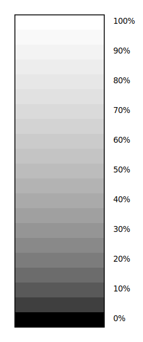
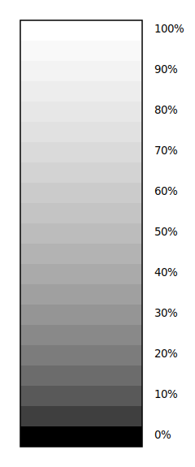

{kind=link}
{kind=link}
{kind=link}